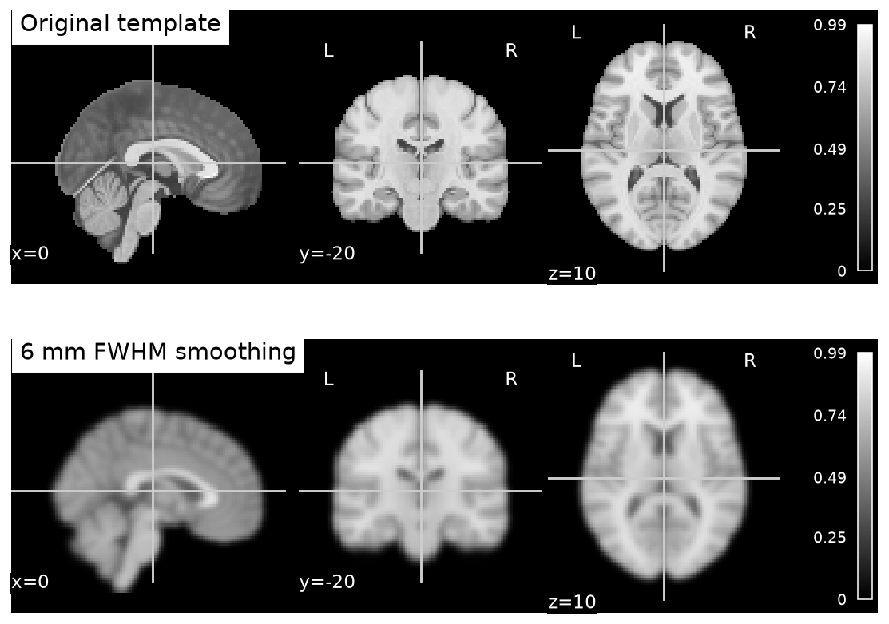

Source: README.md
A beginner course for a learner who uses AI to write short analysis snippets and wants to understand, inspect, and defend what those snippets do.
Start here: Setup and the AI teaching contract, then two foundation classes. The complete reading edition collects the teaching text in one file. The four notebooks contain the executable demonstrations; their HTML companions show the verified outputs without installing Python.
What this course is
24 core classes, two foundation classes, and two capstone sessions. Allow 14 weeks at two 60–75 minute classes per week, plus 30–60 minutes of practice weekly. Slow down when the explain-back questions are difficult. The target is informed use of small snippets, not independent software engineering or the full training of a master's degree.
USC's NIIN curriculum supplies four broad subject areas. Detailed public syllabi were not located during this research session. The sequence, lessons, prompts, notebooks, assessments, and capstone here are original; this is not USC course material or an official NIIN syllabus. Research and materials record.
What she should be able to do
For a transformation, explain the input, output, parameter units, what changes, what information is lost, one likely failure, and the evidence needed to accept the result. Ask an AI to implement that step, inspect it, and explain its scientific limits. She need not memorize syntax; she must be able to reject plausible-looking code and conclusions.
Suggested order: interleave understanding with practice
The numbers label subject areas, not a requirement to finish one block before touching another. Introduce a research question early, before choosing processing settings.
The rule for every class
Predict → ask AI for one small operation → inspect code → run → compare → explain. No points for the number of lines she writes. Keep the answer key closed until she explains the result. Use short prompts from the lesson, and paste the tutor contract into each fresh AI conversation.
Every class has an explanation, a concrete experiment, an intentional mistake, expected checks, and exit questions. Code cells are short; some experiments need several cells. A successful run is one piece of evidence, not automatic validation.
Materials included
The runnable core uses small synthetic arrays so she can see the correct answer. It does not perform research-grade MRI preprocessing. The real-data stage uses an existing documented teaching pipeline; an instructor reviews the acquisition, processing, and inference decisions.
Back to contents ↑Source: SETUP.md
Setup: one tutor, one notebook, one operation at a time
Written 24 September 2026. Model tags and interfaces can change; verify the linked provider page when installing. The lessons work with Ollama + Goose + a tool-capable Qwen3.6 or Gemma4 model, or with ChatGPT as the tutor. Model choice does not change the scientific checks.
Choose a route
The language model is the tutor/code assistant. NumPy, SciPy, NiBabel, Nilearn, and scikit-learn do the numerical work. An LLM's fluent explanation is not an image-registration algorithm, and a general vision model seeing a screenshot is not validated volumetric MRI analysis. A neuroimaging foundation model later in the course is a different kind of model with its own data and validation requirements.
Local AI route
- Install Ollama and Goose using their official instructions for the learner's operating system.
- Choose an explicit model tag. Current official listings include
gemma4:e2b, gemma4:e4b, qwen3.6:27b, and qwen3.6:35b. Start with a model that fits the machine and passes the short exercise below. Exact hardware is not yet known.
- Download one chosen model. For example:
ollama pull gemma4:e2b
ollama run gemma4:e2b
For a machine suited to the larger Qwen model, substitute qwen3.6:27b in both commands. “Qwen 3.6+” is a preference, not a literal Ollama tag. Newer versions can be substituted after checking their exact tags and tool support.
- Keep the Ollama service running. Run
goose configure, select the Ollama provider, enter http://localhost:11434, and select the same installed model tag. In Goose Desktop, configure the equivalent provider/model settings. See official provider guidance.
- Open only this course folder for the session. Use a mode that lets her review execution and enable only the file/code tools needed for the exercise. The
.goosehints in this folder gives the tutor instructions; it is guidance, not a security boundary.
- Run the smoke test below. If tool calls fail, she can use the model as a chat tutor and paste the snippet into Jupyter. A model's advertised tool capability does not guarantee reliable tool use in every integration.
The Gemma4 listing currently shows roughly 7.2 GB and 9.6 GB downloads for e2b/e4b. The Qwen3.6 listing shows roughly 18 GB and 23 GB for 27b/35b. Download size is not total working memory; the runtime and context also need memory. These are installation facts, not claims about neuroimaging accuracy. No large model download is required to read or execute this course's reference notebooks.
Use an ordinary local tag rather than a cloud tag when the intention is local inference. Goose's external tools can still send data outside the machine. The bundled exercises use synthetic data. For actual research data, use the lab's approved environment and data rules.
ChatGPT route
Open ChatGPT, start a learning conversation, and paste the tutor contract plus the current lesson. Ask it to work one prediction and one snippet at a time. Run reference snippets in local Jupyter, then paste the text output or a plot from the synthetic exercise. This route does not require Goose or configuring an OpenAI API key. Available tools and models vary with the account; the course does not require a particular paid tier. Official ChatGPT guidance.
Python notebooks
In the course's parent folder, use the existing .venv for this delivered workspace, or create one on another machine:
python3 -m venv .venv
.venv/bin/python -m pip install -r course/requirements.txt
.venv/bin/python -m jupyter lab course/labs
On Windows replace .venv/bin/python with .venv\Scripts\python.exe. Pick the virtual environment's Python kernel. Installation needs internet; the four core notebooks themselves do not. Each core notebook is standalone and should be run from top to bottom. Within a section, run its cells in order. Exported .html companions let her inspect the reference outputs without installing anything.
The tested package versions are in requirements-tested.txt. The shorter requirements file gives compatible package families for another machine; rerun the notebook checks after an environment change. On this Mac the notebooks were checked in Python 3.14; use a Python version supported by all chosen packages if setting up elsewhere.
The tutor contract
Copy this into the chosen AI at the beginning of each lesson:
You are my neuroimaging tutor. I am learning to supervise AI-written analysis, not memorize programming syntax. Work on only the current lesson. Explain the input, named axes, units, output, parameters, and what information will be changed or lost. Ask me to predict one result and wait for my answer. Then propose one small operation, usually no more than 20 lines. Tell me how to inspect the code and show at least one numerical check and one visual check when relevant. Do not run ahead or reveal the answer key before I try. Use the supplied synthetic data first. Label simulations and assumptions. If I make a mistake, explain the missing concept in simpler terms and give a smaller example. Do not remove checks to make code pass. Do not invent a file, API, citation, execution result, diagnosis, or scientific conclusion. Preserve raw inputs, record actual versions/settings, and distinguish code you proposed from code we executed. When you suggest a method, name the research question that makes it appropriate.
Ten-minute acceptance exercise
Ask: “For [2,4,6], predict the mean and describe what z standardization does. Wait. Then provide a short snippet with ddof=0, verify its mean and SD, and explain why this is not a significance test.”
The tutor passes if it waits for a prediction, gives executable short code, recovers mean 4, produces standardized mean near 0 and SD near 1, and rejects the significance-test interpretation. This is a small usability check, not a model benchmark. If it fails, use the provided reference notebook and a stronger available tutor model; do not let the learner absorb the incorrect explanation.
When something fails
- Import error: check which Python kernel is running and install into that environment.
- Goose cannot reach the model: confirm Ollama is running and the endpoint and installed tag match.
- Slow or failed inference: reduce model size/context, or use ChatGPT; keep notebook data small.
- AI forgets the instructions: start a fresh lesson conversation with the contract and current data card.
- Wrong numbers or plots: compare with the supplied checks; ask the AI to identify the first divergent step. Never ask it to simply make the assertions pass.
Back to contents ↑Source: lessons/00_bridge.md
Two bridge classes before the core course
These are original introductory lessons. They provide the minimum vocabulary needed to supervise the processing and modeling exercises. They do not replace anatomy, acquisition, or research training.
Bridge A — What an MRI number measures (60 minutes)
Outcome: Explain why the same tissue can have different intensities in different scans, and why a bright voxel alone is not evidence of increased neural activity.
0–10 minutes: predict. Imagine two photographs of one room with different lighting. Brightness can change without the objects changing. MRI contrast also depends on how the measurement is made, although the underlying physics is different. Ask the learner whether a brighter region must contain more neurons. Keep her answer to revisit.
10–25 minutes: minimum explanation. A voxel is a small volume represented by one stored value. Tissue may contain mixtures within that voxel. A structural image records spatial contrast; an fMRI run samples spatial volumes repeatedly. The affine connects voxel indices to physical coordinates. A filename is not enough to establish that coordinate system.
T1 is a longitudinal recovery time constant; T2 describes transverse decay from intrinsic interactions; T2 includes additional dephasing associated with field inhomogeneity. TR is a sequence repetition interval and, in ordinary single-echo volume-based fMRI, the interval used to describe volume sampling; TE is echo time. T1-weighted and T2-weighted images emphasize different contrast relationships, and are not automatically quantitative maps of T1 or T2. Standard gradient-echo BOLD imaging is sensitive to T2 effects associated with blood oxygenation. BOLD is an indirect hemodynamic measurement, with timing and other physiological influences. The duplicated “T2” in the original topic list is treated here as T2 and T2*.
Use a deliberately simplified spin-echo-like signal expression, S = (1-exp(-TR/T1))*exp(-TE/T2), with equal proton density. It illustrates contrast dependence, not a scanner simulator. It omits sequence-specific effects, flip angles, receive sensitivity, and many other influences. A gradient-echo BOLD model would require different assumptions.
25–40 minutes: AI-guided experiment. Ask:
Use this simplified expression only as a teaching model. Assume hypothetical tissue A has T1=800 ms, T2=80 ms and tissue B has T1=1400 ms, T2=120 ms. Ask me to predict the effect of changing TR from 500 to 3000 ms while TE stays 20 ms. Then give at most 15 lines computing four signals. Explain the units and what the model omits. Do not label these numbers as measurements of real gray or white matter.
Reference snippet:
import numpy as np
t1 = np.array([800., 1400.]) # hypothetical ms
t2 = np.array([80., 120.])
for tr in [500., 3000.]:
signal = (1 - np.exp(-tr / t1)) * np.exp(-20. / t2)
print(tr, signal.round(3))
At TR=500 ms the values are approximately [0.362,0.254]; at 3000 ms they are [0.760,0.747]. Both increase but the relative contrast changes. Repeat at TE=80 ms; the longer-T2 tissue loses signal more slowly. Plot TE from 10 to 120 ms at a fixed TR, using identical plot scales.
40–50 minutes: break it. Mix a TR expressed in seconds with T1 values expressed in milliseconds. Detect the nonsensical change and fix units, not plot limits. Say why this toy cannot predict a clinical diagnosis.
50–60 minutes: explain back. (1) Does a T1-weighted image directly report each voxel's T1 in milliseconds? Answer: not generally; a quantitative mapping acquisition/model is needed. (2) Can a BOLD peak be interpreted as the exact instant neurons fired? Answer: no; it reflects a delayed, indirect vascular response. Deliver a measurement card distinguishing tissue property, acquisition setting, and stored intensity.
Read: Oxford FMRIB's signal explanation and BIDS MRI metadata, especially RepetitionTime/EchoTime units. Our numerical example is original and uses milliseconds consistently; BIDS timing metadata uses specified units, commonly seconds for these fields.
Bridge B — Ask AI to teach rather than finish (60 minutes)
Outcome: Use the tutor contract to obtain a short, inspectable snippet and defend one result without AI assistance.
0–10 minutes: Complete the setup smoke test, or read the supplied notebook output if setup is not ready. Say aloud: “The model proposes code; the numerical library computes; I check whether this answers the question.” Ask for one operation at a time. A tutorial answer can sound convincing while using the wrong axis or units.
10–20 minutes: Learn just five coding ideas: a variable names data; a function performs an operation; a parameter chooses behavior; an array has shape and axes; an assertion checks a stated condition. A traceback is a report of a failure, not proof that the entire approach is wrong. The learner's task is to explain the calculation, not remember punctuation.
20–40 minutes: Copy 580.1's first code cell, run it, and change one number. Ask AI to describe the expected shape before execution. Then request:
Explain every line of this cell using input → operation → output. Point out exactly where the axis is selected. Give me one plausible wrong version and ask me how I would detect it. Wait for my answer before explaining the fix.
Save the original and modified outputs. If the tutor provides a large script, ask it to reduce the task to the smallest operation you can check. If it claims a file was loaded, require the actual filename and reported metadata. If a source is cited, open the link and check it supports the statement.
40–50 minutes: Ask for an intentionally wrong answer: “Average all numbers and call that a 3D image.” The learner must reject the interpretation using the output's shape. Repeat with “the code ran, so the method is valid.” Describe a case where correct code computes the wrong quantity.
50–60 minutes: Close the chat and explain what happened in one minute. Deliver the transformation card. (1) Who decides whether smoothing is appropriate for the research question? Answer: the researcher with methodological supervision, aided by evidence; successful AI execution does not decide it. (2) What should AI say if it has not executed a snippet? Answer: that it is proposed code, with checks to run, not a fabricated result.
Passing condition: The learner can name the inputs, operation, output, one failure, and one independent check. If not, repeat with three numbers and a mean. Do not advance merely because the notebook ran.
Back to contents ↑Source: lessons/580.md
Data science: understand the numbers AI produces
Six original lessons inspired by the published scope of USC NIIN 580. These are our lessons, not USC's syllabus. Start with no Python knowledge; the learner edits a number, a column name, or an axis and explains the result. Use the notebook alongside this text. Every dataset here is synthetic.
Each class takes about 70 minutes: predict (5), explanation (10), guided AI exchange (10), notebook experiment (25), deliberate mistake (10), explain-back (10). Spend another 15 minutes on the linked reference only if needed. Write answers before opening the answer key.
Goal: Name every axis and predict an output's shape before execution.
An array is a numbered set of containers. A teaching fMRI array with shape (4, 5, 3, 8) has four spatial positions along one direction, five along another, three slices, and eight time points. That description comes from our data convention; shape alone cannot tell you which axis is time. Real files need metadata. A mean is an instruction to collapse a chosen set of containers. A temporal mean of this array leaves a (4, 5, 3) image. A mean across all four axes leaves one number and discards location and time.
AI may produce correct Python for the wrong question. data.mean() runs successfully, but it cannot make a temporal-mean image. Learn to read three things: what object enters, what operation happens, and which dimension disappears. You do not need to memorize NumPy syntax. Ask for axis labels and a shape check every time.
Transformation card: 4D signal → temporal mean image. Spatial indexing stays; time variation is lost. Values remain in the input signal units. This is averaging, not a statistical significance map and not anatomical registration. A bright temporal mean does not identify a task response.
Ask the AI:
Tutor me using the 580.1 notebook. Before code, ask me what (4,5,3,8) means and what shape a temporal mean should have. Then give at most 12 lines to average only axis 3 and show a slice. Include input/output shape assertions. Explain each line in ordinary language. Do not invent anatomical labels for the toy array. Wait for my prediction.
Do: Run the supplied cells. Compare the temporal mean with the first time point. The notebook uses a deterministic ramp, so the mean at [0,0,0] must be 3.5. Change the averaging axis to 0 and predict the new shape (5,3,8). Restore axis 3. Inspect minimum, maximum, datatype, and count of non-finite entries before trusting any plot. Explain why those checks would matter for a real file containing missing data.
Break it: Replace axis=3 with no axis. The scalar answer is mathematically legitimate but fails the intended shape check. Ask AI to explain the failure, not remove the assertion. Deliver one annotated screenshot with named axes and one sentence stating what information averaging destroyed.
Exit questions: (1) Can shape alone establish anatomical left and right? (2) Does averaging across time remove all motion artifacts?
Reference: NumPy beginner guide: shape, axes, indexing. Use its array diagrams as reference; the exercise and teaching examples above are original.
580.2 — Join participants to measurements without mixing people
Goal: Explain what one row means, and verify IDs before an analysis.
Suppose a measurements table is sorted by scan date and a behavioral table is sorted alphabetically. Pasting the second table's scores next to the first table's rows silently assigns measurements to the wrong people. AI can do this accidentally with .values, positional indexing, or a merge with an incorrect key. A plot may still look convincing.
Use a participant ID to match rows. In this lesson there is exactly one scan and one outcome per participant. That makes a one-to-one join appropriate. In a longitudinal project, the key may instead be participant plus visit; do not force one-to-one validation onto a genuinely repeated-measures design. The correct key is a scientific statement about the observation.
Transformation card: two ID-keyed tables → one analysis table. Columns are combined; retained IDs should be explicit. An inner join can drop people without matches, and a duplicate key can multiply rows. Neither is automatically acceptable. Missing outcomes are unknown measurements, not zero scores. Removing missing rows changes the analyzed sample and can change the population to which the conclusion applies.
Ask the AI:
In at most 15 lines, join the two synthetic tables in section 580.2 by participant_id. Verify one-to-one matching, show unmatched IDs, retain missing values, and print row count before and after. Explain why row order is unsafe. Do not fill missing outcomes with zero or discard participants without showing me the consequence.
Do: The three participants have expected matched outcomes 10,20,30 in participant order, although the source rows are shuffled. Print the joined ID and score together. Add a duplicate behavioral row and run the protected merge; it must raise a validation error that the notebook catches and explains. Then remove one behavioral row and use a left join with an indicator column to find the unmatched participant. State the intended missing-data policy before applying it.
Break it: Assign scores by their current row order. Identify which two participants get exchanged. Explain why checking only the final table's shape would miss this error. Deliver a tiny data dictionary: ID, measurement units, outcome units, visit key, and what missingness means.
Exit questions: (1) Why is a perfectly rectangular table insufficient evidence of a correct merge? (2) When is participant ID alone insufficient as a key?
Reference: pandas merging guide, especially join keys, validation, and merge indicators.
580.3 — Standardization changes a scale, not the evidence
Goal: Distinguish a standardized measurement from an inferential z statistic.
For this class, a standardized value is (value − reference mean) / reference standard deviation. It tells you how far a value is from that reference center in standard-deviation units. It does not say that the value is unlikely under a scientific null hypothesis. An inferential z map needs a statistical model and a null distribution; calling both quantities “z” does not make them interchangeable.
For measurements 2,4,6, using ddof=0 gives mean 4 and standard deviation about 1.633. Standardized values are approximately −1.225,0,1.225. Choosing ddof=1 gives a different denominator. Neither convention can remain implicit. A constant column has zero spread, so the direct formula divides by zero; inspect and flag it instead of concealing it.
Transformation card: a vector plus a declared reference distribution → a dimensionless vector. With a positive nonzero scale, ordering is retained. Absolute units disappear unless the mean and scale are saved. The operation does not make a skewed distribution Gaussian, remove confounding, or manufacture independent observations. Standardizing each participant's time series also removes between-participant scale information; standardizing a feature across participants answers a different question.
Ask the AI:
Show at most 15 lines that standardize [2,4,6] with ddof=0. Report the mean, SD, axis, and reference population. Add an explicit constant-vector check. Compare the result with ddof=1. Explain why the output is not a p value or a brain activation z map. Ask me what would be lost if each participant were standardized separately.
Do: Check mean ≈ 0 and SD ≈ 1 using the same ddof used in the transformation. Reconstruct the original values using the saved scale and mean. Add a second column with different units and standardize each column independently. Predict what changes if you pool both columns into one mean and SD. Extend the discussion to feature scaling: when predicting new participants, fit scaling on the training participants and reuse those parameters on the test set.
Break it: Ask AI to label every standardized value above 1.96 “significant.” Reject that label: the reference is descriptive, not a justified sampling distribution for a hypothesis test. Deliver a card naming your reference sample, axis, ddof, and whether the operation was fitted on training data only.
Exit questions: (1) Must standardized test-set features have mean zero? (2) Does standardization fix a heavy-tailed distribution?
Reference: SciPy zscore API for the axis, ddof, and missing-data parameters.
580.4 — Regression, prediction, and residuals
Goal: Read a fitted line and explain what its residuals do and do not represent.
In a tiny noiseless example, an outcome is 2 + 3 × x. A regression with an intercept can recover coefficients 2 and 3. The fitted value is the model's output for one input; the residual is observed minus fitted. This separates what the chosen model can represent from what is left over. It does not separate biology from non-biology.
For a real brain measurement, a slope describes an association under the model and included variables. It is not automatically a causal effect. Residuals can still contain meaningful biology, omitted confounders, noise, and model mistakes. A nonlinear trend in a residual plot suggests that a straight line may be inadequate. More variables can improve a training fit even when prediction gets worse.
Transformation card: design matrix X and outcomes y → coefficients, fitted values, and residuals. The design matrix here has an intercept column of ones and a column for x. Fitted plus residual equals observed. Keeping residuals alone discards the model-explained component, which might include the research signal. Changing the units of x changes the slope's units.
Ask the AI:
Fit the original noiseless example with NumPy least squares in at most 15 lines. Name the columns of X before using them. Show the equation, coefficient units, fitted values, and residuals. Verify y equals fitted plus residual. Then add a curved signal and ask me whether the residual plot challenges the model. Do not make a causal claim from the fitted slope.
Do: Verify coefficients [2,3] to numerical tolerance and residuals near zero. Change x from years to months without changing the observed y; predict that the numeric slope is divided by 12. Add reproducible noise and compare the fit. Plot residuals against x, then use the notebook's curved example and describe the visible failure. Ask AI to identify assumptions instead of simply recommending a more complex model.
Break it: Delete the intercept column. Explain why the fitted slope changes and why “the solver completed” is an inadequate check. Deliver the exact design columns, the fitted equation, and a residual plot with a caption distinguishing association from causation. NIIN520-inspired lessons later extend this into contrasts and uncertainty; this lesson teaches the mechanics first.
Exit questions: (1) Are regression residuals necessarily pure noise? (2) Does a lower training error establish better generalization?
Reference: NumPy least-squares documentation. Use the API to verify returned objects rather than copying an unexplained recipe.
580.5 — QC changes the sample, and uncertainty survives cleaning
Goal: Show how an outlier or an exclusion rule changes an estimate, and distinguish SD from SE.
A quality-control rule decides whether a measurement can support the planned analysis. It should have a reason tied to measurement quality, not whether removing the participant produces the desired result. In imaging, a motion summary can flag a problem, but a single threshold is not a complete image review. Here we use a toy numeric rule so the consequence is visible.
The measurements 1,2,3,4,5 have mean 3. Add 100 and the mean becomes about 19.17, while the median is 3.5. This is sensitivity, not proof that 100 must be discarded. It might be an error, an unusual valid observation, or a member of a different population. Investigate its origin. Plot individual observations, preserve the raw table, and record decisions.
Transformation card: observed sample plus a documented eligibility/QC rule → retained sample and an exclusion log. The retained observations are unchanged; the sample and potentially its target population change. Summarizing with a mean then loses the distribution's shape. Standard deviation describes spread among values; standard error describes uncertainty of an estimator under assumptions. Repeated scans of the same participant are not extra independent people.
Ask the AI:
Compare the mean and median before and after adding 100, with all points visible. Use at most 15 lines. Do not delete the unusual value automatically. List three possible explanations for it and what metadata I would inspect. Separately simulate means from independent synthetic participants at n=10 and n=100, with the same population SD. Explain why the mean's uncertainty changes.
Do: Reproduce the exact toy summaries. The notebook simulates many independent samples with population SD 2; the SD of sample means should be near 2/sqrt(n), smaller at n=100. This is a repeated-sampling illustration, not a confidence interval for a real cohort. Write a hypothetical QC rule before inspecting a group difference, then compare retained counts by group. If the rule removes most of one group, explain the resulting interpretation problem.
Break it: Let AI replace all missing values with zero and call the larger row count “more power.” Identify both the altered outcome distribution and the false information claim. Deliver a sample-flow table and a sensitivity paragraph reporting how an estimate depends on reasonable QC decisions, without selecting the result you prefer.
Exit questions: (1) Is a larger SD identical to a larger SE? (2) Can removing low-quality observations introduce a selection problem?
Reference: SciPy standard error for the estimator and convention; the QC scenario is an original teaching exercise.
580.6 — Reproduce and audit an AI-produced analysis
Goal: Make a small result reproducible and catch a leakage bug.
An AI conversation is not a complete analysis record. A reproducible result needs the exact input, code, parameters, package versions, seed where randomness is used, and what actually ran. A model name is useful provenance but does not replace the executed script. Saving a seed does not guarantee identical output across software or hardware changes; retain outputs and versions too.
One frequent AI mistake is fitting a scaler before a train/test split. The scaler then uses information from the participants whose performance was supposed to be unseen. The same logic applies to imputation, feature selection, dimensionality reduction, and tuning. Pass the whole pipeline to cross-validation so preprocessing is refitted using only each training fold. Unsupervised transformations can still leak test distribution information.
Transformation card: raw train/test features → scaled features plus fitted preprocessing parameters and an audit record. The train-derived transform is fixed before viewing test labels. A transformation card must say where its parameters came from. It is not enough to state the formula. For repeated participants, participant grouping is decided before fitting anything learned from the cohort.
Ask the AI:
Audit the 580.6 example. State which observations each fitted quantity sees. In at most 15 lines, fit StandardScaler on train only, transform train and test, and print the fitted mean. Show the tempting incorrect full-data fit separately as a labeled mistake. Save a tiny provenance record with versions, seed, input description, and parameters. Do not claim a random seed proves scientific validity.
Do: Training features are [0,2,4], test features [100,102]. The correct fitted mean is 2; the combined-data mean is 41.6. Check those exact values and explain why test standardized values need not be centered at zero. Use the template in templates/analysis_record.md to record the decision. Restart the notebook and run all cells. Compare the saved result with your earlier output; a discrepancy requires investigation, not a rewritten narrative.
Break it: Ask AI to “fix the unusual test mean by fitting again on test.” Explain why that changes the representation and invalidates the planned comparison. Then ask for an audit that lists one potential weakness and one check without adding features. Deliver a rerunnable notebook, a concise record, and an explanation of the boundary between training and test data.
Exit questions: (1) Does unsupervised preprocessing guarantee no leakage? (2) Can a reproducible result still be scientifically wrong?
Reference: scikit-learn common pitfalls. Continue with 550.3 for participant/site splits and tuning.
Answer key — use after explaining your own answer
Back to contents ↑Source: lessons/540.md
Six original, AI-guided classes inspired by the broad subject area of USC NIIN 540. These are our classes, not USC syllabi or a claim of equivalent graduate training. USC confirms that NIIN 540 addresses processing methods, software, and workflows; a detailed public syllabus was not located in the searches recorded in the source ledger. Use the companion notebook for every class. Its arrays are deliberately synthetic, not real MRI, and its short snippets teach reasoning rather than replace validated preprocessing software.
The learner directs Goose with a locally served model, or uses ChatGPT to produce snippets. The same prompts work in either route. Read the prompt, predict the result, run one cell, inspect the check, then explain the result without the AI. Do not ask the agent to run an entire research pipeline unattended. Each lesson produces one small, reviewable artifact.
540.1 — A scan is numbers plus a map (65 minutes)
Outcome. Given an array and its coordinate mapping, explain what one voxel means and detect a silent left/right mapping error. No matrix algebra course is required: start by treating the affine as a machine that converts an array address into a physical location.
0–10 minutes: prediction. Draw three boxes labeled array, affine, and metadata. The array holds measured intensities at numbered positions. The affine relates those positions to a physical coordinate system. Metadata describes such things as units and sampling. Two images can contain identical numbers yet describe different locations. Before running section 1, predict whether reversing the first array axis changes the number of samples, their histogram, or their physical locations when the affine is updated correctly. NiBabel's coordinate tutorial gives the real-image counterpart to this toy exercise.
10–20 minutes: mini explanation. Our toy has shape (32, 40, 24), voxel spacing (2, 2, 3) mm, and a negative first affine diagonal entry. Increasing that array index therefore decreases the first world coordinate. Screen left is a display choice, not sufficient evidence of the person's left. Reordering axes or reversing one axis can preserve all samples, provided the mapping changes consistently. Editing only the affine can move the declared location without moving any numbers; that is not image registration. In actual NIfTI work, inspect header units, the selected affine and qform/sform consistency, and anatomical overlays rather than guessing from a screenshot.
Transformation card. Input: a 3D intensity array and a 4×4 affine. Operation: reverse axis 0 and compose the affine with the index reversal. Output: a differently indexed array representing the same sampled locations. Preserved: values, histogram, sample count, and each corresponding sample's world location. Lost: nothing numerically in this exact reindexing. This is different from interpolation, which we meet next.
20–35 minutes: ask the AI. Paste:
I am learning with a synthetic volume, not interpreting a patient scan. Using the existing volume, affine, and point variables, write one Python cell of at most 20 lines that prints shape, finite-value fraction, voxel spacing from affine column lengths, and the world coordinate of point. Explain each unit in plain English. Then explain how to reverse axis 0 while preserving physical positions. Do not overwrite the originals or label anatomical left/right from the plot alone.
35–50 minutes: exercise and exact check. Run the section, locate point = [5,10,4,1], and calculate its location by hand. It must be [20,-20,-18] mm. After the correct reversal, the corresponding index is [26,10,4,1]; its world location must match within 1e-12. Compare the histogram and array size. Save a three-sentence caption distinguishing array order, world coordinates, and display orientation.
50–60 minutes: deliberate bad result. Keep the old affine after reversing the data. The new address maps to [-22,-20,-18] mm: the intensity histogram still matches, but the sample is misplaced by 42 mm. Explain why “the numbers look fine” is insufficient QC. For a real dataset, an unexplained metadata mismatch is a reason to investigate the source, not manually flip until the brain looks familiar.
60–65 minutes: exit ticket. (1) Can matching shapes prove that two images are aligned? (2) Which two things must change together during this exact axis reversal? Answers are below, separate from the lesson.
Outcome. Tell registration apart from resampling, explain transform direction, and select interpolation appropriate to intensities or categorical labels. This prevents a common AI mistake: matching array sizes and claiming that anatomy is now aligned.
0–10 minutes: prediction. Section 2 contains one toy rectangle and a copy shifted by (5,-3) array positions. Predict the shift needed to bring the copy back. Predict whether a half-voxel shift of a binary label image should create a tissue category called 0.5. Write predictions before reading the output. The FSL FLIRT guide describes real registration and application of stored transforms; our integer search is only a transparent teaching example.
10–25 minutes: mini explanation. Registration estimates a mapping by comparing a moving image with a reference, under a chosen model and similarity criterion. Resampling uses a known mapping and a chosen output grid to calculate output values. An identity mapping can resample to a finer grid without estimating alignment. Conversely, estimating a transformation can produce a matrix without writing a new image. Rigid registration changes position and orientation; affine registration additionally allows scale and shear; nonlinear registration allows spatially varying deformation. A more flexible model is not automatically more biologically appropriate.
Interpolation estimates values where the output grid asks for a location between input samples. Linear interpolation combines nearby intensities; nearest neighbor chooses an existing value and is a simple appropriate choice for categorical labels. Nearest neighbor can still change the shape or volume of a labeled region. A smaller output voxel does not recover detail that was never acquired. Repeated resampling can progressively blur or alter images, so real pipelines often compose compatible transforms and resample once. These claims require inspecting actual implementation and coordinate conventions.
Transformation card. Input: moving array, reference grid, and either a mapping to estimate or one already known. Output: transform parameters and/or values on the reference grid. Preserved: intended correspondence if registration succeeds. Changed or lost: sampling, some spatial detail, and possibly field-of-view coverage. The output affine describes the new grid; it does not by itself document the whole registration history.
25–40 minutes: ask the AI. Paste:
In at most 20 lines, use existing moving and reference toy arrays to search integer shifts from -7 to 7 on each axis and minimize mean squared error. Print the best shift and error. Explain why this is a toy registration, and why scipy.ndimage.affine_transform expects an output-to-input mapping. Do not claim this cost function or search is suitable for cross-modality brain registration. Keep originals unchanged.
40–55 minutes: exercise and exact check. Run the search. The best shift must be (-5,3) and the mean squared error must be below 1e-12. The direct pull-resampling demonstration uses offset (5,-3) and must reproduce the same aligned array. Describe why these signs differ. Run the half-voxel interpolation comparison: nearest-neighbor output contains only 0 and 1; linear output must contain at least one strictly intermediate value. Record these unique-value checks next to the two images.
55–65 minutes: deliberate bad result. Apply (5,-3) as the corrective image shift. The error increases instead of reaching zero. Then relabel the linearly interpolated mask as “new tissue classes.” Reject both claims: one reverses the mapping, the other invents labels from averaging. Outline a real QC plan using anatomical boundary overlays in several planes; a low numerical registration cost alone cannot establish anatomical correctness.
65–70 minutes: exit ticket. (1) Does changing 3 mm voxels to 1 mm voxels add acquired detail? (2) Why do transform direction and interpolation both belong in the processing record?
540.3 — Smoothing has physical units (65 minutes)
Outcome. Explain spatial smoothing as neighborhood averaging, convert a millimeter width to voxel units, and identify which information becomes less precise. The goal is to audit the parameter that the AI sends to a library.
0–10 minutes: prediction. Place a single bright point in an otherwise dark toy volume. Predict what happens to its peak and surrounding values after Gaussian smoothing. Will a 6 mm kernel cover the same number of samples along axes with 2 mm and 4 mm spacing? A kernel's physical width and its width in array samples are different quantities.
10–25 minutes: mini explanation. Gaussian smoothing replaces each sample by a weighted average of nearby samples. Nearby points receive larger weights. Full width at half maximum, FWHM, describes the width of the Gaussian at half its peak. Its standard deviation is sigma_mm = FWHM_mm / sqrt(8*log(2)), approximately FWHM divided by 2.355. A SciPy Gaussian filter takes sigma in samples; divide each physical sigma by that axis's voxel spacing. With 6 mm FWHM and (2,2,4) mm spacing, sigma is approximately (1.274,1.274,0.637) voxels. The Nilearn smoothing reference instead specifies its FWHM in millimeters. The same-looking number passed to different functions can therefore produce radically different images.
Smoothing can stabilize estimates when its spatial assumptions suit the question, but it mixes nearby tissue and reduces localization. A brighter-looking cluster after thresholding is not proof of a stronger biological effect. Smoothing creates spatial dependence among samples. The requested kernel is additional smoothing; the effective final smoothness also depends on acquisition, previous interpolation, and earlier processing. Mask boundaries, zero padding, and tissue boundaries matter. A preserved sum in our isolated impulse demonstration is a check on this demonstration, not a universal promise that any masking and smoothing workflow preserves totals.
Transformation card. Input: voxel intensities, spacing, and requested kernel width. Operation: local weighted averaging along spatial axes. Output: an array on the same grid with redistributed intensities. Preserved here: shape, coordinate mapping, and approximately the impulse's total mass away from boundaries. Lost or changed: sharp boundaries, peak magnitude, independence of neighboring noise, and fine spatial distinctions. Do not smooth the time dimension by accidentally treating a 4D series as four spatial axes.
25–40 minutes: ask the AI. Paste:
Using the existing 3D impulse array and spacing, generate at most 20 Python lines to apply a 6 mm FWHM Gaussian with SciPy. Show the FWHM-to-sigma conversion and mm-to-voxel conversion explicitly. Print sigma, input/output sums and peaks, and make a labeled center-slice comparison. Keep the original unchanged. Explain why the function's sigma argument cannot simply be 6 and why no temporal axis is involved.
40–50 minutes: exercise and exact check. Run section 3. Check sigma rounded to three decimals equals [1.274,1.274,0.637]. The correctly smoothed sum must differ from 1 by less than 1e-10; the peak must be positive and lower than 1. Explain where the missing peak intensity went. Submit the plots with width, units, and voxel spacing in the caption, not merely “smoothed image.”
50–60 minutes: deliberate bad result. Set sigma=6 directly. This requests 6 samples on every axis, corresponding to approximately (28.26,28.26,56.52) mm FWHM. Its physical width is anisotropic and much larger than requested. Use the displayed peaks and slice profiles to explain why a visually smooth result can be scientifically wrong.
60–65 minutes: exit ticket. (1) Why is a scalar sigma in voxels physically anisotropic here? (2) Which biological question might be harmed by mixing across a narrow anatomical boundary?
540.4 — Filtering changes which time scales survive (70 minutes)
Outcome. Connect TR to sampling frequency, explain what a temporal filter suppresses, and catch an apparently successful filter using incorrect units. Choose cutoffs to serve a stated analysis, rather than treating one frequency band as mandatory for every fMRI study.
0–10 minutes: prediction. Our synthetic time series combines a slow 0.005 Hz drift, a 0.05 Hz component of interest, and a 0.18 Hz component labeled nuisance by construction. With TR = 2 seconds, predict the sampling rate and Nyquist frequency. A 0.05 Hz oscillation has a 20-second period. Which component should a 0.01–0.10 Hz band-pass retain most strongly? These labels are known only because we manufactured the signals; frequency alone does not identify neuronal activity in measured BOLD.
10–25 minutes: mini explanation. The sampling rate is 1/TR, or 0.5 Hz here; the Nyquist frequency is half that, 0.25 Hz. A high-pass attenuates slower variation and a low-pass attenuates faster variation. A band-pass combines both. Actual filters have transition regions, not perfect walls. We use a Butterworth filter represented as second-order sections and apply it forward and backward for an offline, zero-phase demonstration. That is not suitable as an unchanged real-time algorithm because it uses future samples. The forward-backward response differs from one pass, and start/end behavior depends on padding and data length. See SciPy's filter design and forward-backward operation.
Sampling limitations occur before preprocessing. If fast physiological variation aliases during acquisition, post-acquisition filtering does not generally reconstruct its original frequency. Dropping motion-contaminated frames also creates gaps: concatenating the surviving samples and filtering as if the original TR still held misrepresents time. Real censoring and filtering must be coordinated. For task fMRI, slow task effects can overlap a proposed high-pass cutoff; filtering may remove the effect being studied. Inspect the experiment's timing and model before choosing a band.
Transformation card. Input: evenly spaced time samples, their TR, filter type, cutoffs, and boundary policy. Output: a modified time series of the same length in this demonstration. Preserved: sampling positions and dominant retained oscillation. Changed or lost: frequency-specific amplitude, edge behavior, temporal dependence, and information in attenuated bands. Equal sample counts do not imply the same number of independent observations.
25–40 minutes: ask the AI. Paste:
Write at most 20 lines using the existing time, raw_signal, and tr=2.0: design a Butterworth 0.01–0.10 Hz band-pass using butter(N=4) (eighth-order band-pass before forward-backward filtering) with fs=1/tr, second-order sections, and sosfiltfilt. Print Nyquist, plot original and filtered signals with seconds on the x-axis, and explain edge effects. Never guess TR from array length. State that these cutoffs are illustrative and are not a universal fMRI recommendation.
40–55 minutes: exercise and exact check. Run section 4. Nyquist must be 0.25 Hz. The notebook estimates amplitudes over the middle 200 samples to reduce edge influence. The retained component's amplitude must exceed 0.90, the drift amplitude remain below 0.10, and the high-frequency component below 0.03. Use the defined sinusoidal projection check; a vague claim that the line looks smoother is insufficient. Compare full-length plots with the checked central interval.
55–65 minutes: deliberate bad result. Repeat using fs=1.0, as though TR were 1 second. The function runs, but the actual 0.05 Hz component is near the wrong filter's upper boundary and its measured amplitude falls below 0.65. Explain why valid Python can implement the wrong scientific operation. Change the plot's x-axis to sample number and explain what information the reader loses.
65–70 minutes: exit ticket. (1) What are sampling rate and Nyquist at TR = 2 seconds? (2) Why cannot a smooth residual be labeled “pure brain signal”?
540.5 — Removing a confound means removing a component (75 minutes)
Outcome. Explain nuisance regression as subtracting the part a model can represent, verify orthogonality, and demonstrate why independent filtering and regression can undo each other. This lesson is about understanding an operation, not choosing an optimal confound strategy for every study.
0–10 minutes: prediction. Draw a measured trace as three contributions: slow drift, modeled nuisance, and remaining variation. If the nuisance regressor overlaps real task-related variation, can regression know which part is biological? It cannot infer that distinction from a shared mathematical pattern alone. Write down what “removed” means before asking the AI.
10–25 minutes: mini explanation. Arrange nuisance traces as columns of a matrix C, with rows matching the measured time samples. Least squares chooses coefficients so C @ beta approximates the measured series. The residual is y - C @ beta. With ordinary least squares, the residual is perpendicular to the included columns, up to numerical precision. This verifies the calculation; it does not prove every artifact is gone or the chosen columns were appropriate. Include an intercept when its removal is intended. Inspect alignment, missing values, column rank, and any censoring mask. Do not blindly include every confound column supplied by a preprocessing package.
Our toy constructs a slow trace d, a faster nuisance trace q, and a remaining trace s. The confound is c=d+q, and the observed data are y=3d+2q+s. First remove the slow component. If you then regress the original, unfiltered c, subtracting its slow part reintroduces a slow component. The corrected exercise removes the same slow basis from both data and confound before fitting. A joint regression on the intercept, drift basis, and confound gives the same residual here. This exact projection example is deliberately simpler than a practical Butterworth-plus-censoring pipeline. Nilearn's cleaning documentation describes coordinated filtering and confound removal; library defaults and version matter.
Transformation card. Input: time series, aligned confounds, and specified temporal model. Output: coefficients, fitted nuisance contribution, and residuals. Preserved: variation outside the modeled subspace. Removed: the fitted component, including biological variation that shares that subspace. Reduced: residual dimensionality by the design rank in this algebraic example. n - rank is not automatically the effective inferential degrees of freedom for temporally correlated, filtered fMRI.
25–40 minutes: ask the AI. Paste:
In at most 20 Python lines, use existing filtered_y and filtered_c to regress an intercept and the filtered confound with np.linalg.lstsq. Print matrix shape, rank, residual mean, and the largest absolute dot product between each design column and the residual. Explain what this check proves and does not prove. Do not standardize or filter again silently; do not add confounds not requested.
40–55 minutes: exercise and exact check. Run section 5. The correct residual must match the known s within 1e-10. Its drift projection must be below 1e-10 in absolute value. The largest absolute design-column dot product must be below 1e-9. The simultaneous design has rank 3 across 300 samples, leaving algebraic residual dimension 297. State why that last number does not license a textbook t-test on these samples.
55–70 minutes: deliberate bad result. Regress the unfiltered confound after filtering only the data. The drift projection is approximately -1 even though the earlier step removed it. Plot the bad and good residuals together. Then pretend q was the task effect instead of nuisance: explain that the corrected mathematics would still erase that effect. Algorithmic correctness and scientific appropriateness are separate judgments.
70–75 minutes: exit ticket. (1) What does a residual orthogonal to included confounds establish? (2) Why must filtering, nuisance regression, and censoring be designed together?
540.6 — Trust a workflow by tracing it and inspecting it (75 minutes)
Outcome. Create a minimal provenance record, distinguish preprocessing from downstream denoising, and inspect a real public fMRIPrep report without pretending the synthetic lab reproduces that software. The final deliverable is a short processing decision memo with evidence and unresolved checks.
0–10 minutes: prediction. Imagine an AI returns a clean-looking image and “processing complete.” List what a second researcher would need to reproduce it: input identity, software versions, parameters with units, order of steps, output grid, confound choices, and quality-control decisions. A hash identifies bytes; it cannot establish whether those bytes were scientifically appropriate.
10–20 minutes: mini explanation. A workflow connects operations with explicit inputs and outputs. A record should include originals and derivatives separately, plus the code and settings that connect them. Section 6 builds a small manifest from the toy operations. The fMRIPrep outputs reference explains its derivative images, confound files, and reports. A preprocessed BOLD filename is not evidence that your selected confounds have already been regressed or that your chosen spatial smoothing and temporal analysis have occurred. Verify actual processing settings and downstream code.
Transformation card. Input: identified data, parameters, software, and QC evidence. Operation: record the actual executed steps and inspect their outputs. Output: a provenance manifest and a review decision. Preserved: the ability to audit the claimed lineage if the records and inputs remain available. Lost: nothing in the recording step itself. A missing record cannot be reconstructed reliably from how an image looks. An AI-generated methods paragraph is a draft to compare against evidence, not that evidence.
20–35 minutes: ask the AI. Paste:
Using the notebook's existing synthetic arrays, produce at most 20 Python lines to build a JSON-serializable provenance dictionary with input/output SHA-256 values, array shape, dtype, Python/NumPy/SciPy versions, smoothing FWHM and voxel units, TR, filter cutoffs, and confound method. Print it; do not upload anything. Then list three scientific facts a checksum cannot validate. Never state that fMRIPrep or real MRI processing was run in this notebook.
35–45 minutes: exact notebook check. Run the manifest cells. The input hash must reproduce on an unchanged copy and differ after changing one voxel. It must differ from the smoothed output hash. The manifest must explicitly mark the data as synthetic and record 6 mm smoothing and TR 2 seconds. Complete the decision memo: requested question, operation, expected change, observed check, and remaining limitation.
45–65 minutes: real-report inspection. Open the official public sample report, which is an older demonstration generated with fMRIPrep 20.2.3, not a recommended current version. Read the anatomical and first functional-run summaries; inspect the brain-mask, functional-to-anatomical alignment, and BOLD-summary figures. Use linked figure files if embedded panels fail. Record one observed boundary and one location where you cannot judge alignment. Record any missing panel as not assessable, never as passing. The metadata checks are TR 2 seconds, one non-steady-state volume, and no susceptibility-distortion correction in the first run. Missing phase-encoding information is also reported. These facts are not a full QC verdict. Compare a motion-trace peak with the carpet plot without equating every simultaneous signal change with motion causation.
65–70 minutes: deliberate bad result. Reject the invented conclusion “fMRIPrep finished, so all artifacts are removed and the study is ready.” Replace it with an evidence-limited statement that names inspected panels, missing information, and planned downstream modeling. The report exercise is a real-data bridge; this course package has not executed fMRIPrep or established scientific acceptability of that participant's data.
70–75 minutes: exit ticket. (1) Does a matching checksum prove correct preprocessing? (2) Does a confounds TSV prove those variables were removed from BOLD?
Answer keys — consult after each exit ticket
Tutor grading: award one point each for the predicted effect, correct units, passing numerical check, and accurate limitation. Require all four before carrying a transformation into real-data work. If a check fails, the learner should describe the disagreement before asking the AI to fix it. Do not let the AI simply loosen the tolerance or delete the assertion.
Back to contents ↑Source: lessons/520.md
Ask a question that the analysis can answer
Six AI-guided classes inspired by the subject area of USC NIIN 520. These are original teaching materials, not USC classes, lecture notes, or a reconstruction of its syllabus. USC publishes a broad experimental-design description; an exact public NIIN 520 syllabus was not located in this search. See source and reuse record.
Each class takes 70 minutes. Use the matching numbered section in the runnable notebook. You can ask Goose with your locally configured Ollama model, or ChatGPT, to explain and modify the snippets. The model is a tutor and drafting assistant; your job is to approve the scientific meaning. Every prompt below asks for small pieces of code, not a whole pipeline. All data are synthetic. No scanner, account, download, or patient information is needed for these labs.
The repeatable routine is predict → ask AI → run → compare → explain. Before running code, say what you expect. Afterwards, save the plot, a one-sentence explanation, and one limitation. Answers are in the separate key.
520.1 — What is one observation?
By the end: explain the question, target quantity, and independent unit before approving an AI analysis. Schedule: 10 minutes mini-lesson, 10 prediction, 20 notebook, 15 deliberate failure, 10 explanation, 5 exit questions.
“Does this brain region respond more to faces?” is a starting idea. A usable question adds who, compared with what, measured how, and averaged over what. For this class: “Among adults sampled from our target population, what is the average person-level difference in a predefined region’s response to faces versus houses?” The quantity we want to estimate is called the estimand. Here it is a mean within-person difference. It is not the percentage of activated voxels or the average of all available scan rows.
A spreadsheet row is a storage choice. One participant may contribute two visits, six runs, and hundreds of measurements. Those entries share a person and often share noise. More entries can improve that person’s estimate, but they do not create more independently sampled people. For population inference in our simple study, the participant is the independent sampling unit. In other studies, treatment may be assigned to classrooms or families; then the design has another layer to respect. Lazic’s methods paper is a useful optional discussion of this issue.
Transformation to understand: participant-labelled measurements → one summary per participant → a group estimate. Averaging changes the number of rows and reduces detail. It should preserve which participant each summary represents. It does not turn an observational comparison into a causal experiment. Ask AI to print both the number of rows and the number of unique participants.
In notebook section 1, three people have values 0, 1, and 3. They contribute 1, 1, and 8 identical rows respectively. Predict the average person and the average row before running the first cell. The expected values are 1.333 and 2.5. Both are mathematically correct; they answer different questions. The row average gives the third person eight votes. Unequal weighting can be appropriate when explicitly justified, but should never happen just because someone has more rows.
Next, the notebook repeats measurements for 12 synthetic people. Compare uncertainty calculated from 12 person summaries with uncertainty calculated while pretending every repeated row is independent. The repeated-row calculation becomes smaller even though no new people were added. The point is the false precision, not the significance threshold.
Copy-paste AI prompt:
Tutor me using section 1 of 520_design.ipynb.
State the estimand and independent unit in plain language.
Explain the two averages without changing the data.
Give one NumPy snippet of at most 20 lines to count people and rows.
Predict the two outputs, then ask me to explain the mismatch.
Do not count scans as independent participants.
Deliberate failure: tell AI that 240 rows mean “n = 240 independent participants.” Ask it to challenge that claim using the subject identifiers, not its confidence. Repair the report to state 12 participants and 240 stored measurements. Save a three-line analysis contract: target population; person-level outcome and contrast; independent unit and weighting. This contract travels with later AI prompts so a new conversation cannot quietly redefine the study.
Exit questions: (1) Why can adding identical scan rows shrink a naive standard error without increasing evidence? (2) Which of the two means answers a question about an equally weighted average person?
520.2 — Separate treatment, site, and person
By the end: identify a confound, recognize what randomization protects, and preserve pairing. Schedule: 10 minutes explanation, 10 predictions, 20 notebook, 15 failure exercise, 10 study sketch, 5 exit questions.
Imagine the patient group was mostly scanned at site B and the comparison group mostly at site A. An observed group difference could contain a scanner difference. A confound mixes an alternative explanation with the comparison you wanted. Writing “control for site” in an AI prompt is not enough: there must be information to separate site from group. If every patient is at B and every comparison participant is at A, no clever regression can independently identify both effects from those data.
Random assignment of an intervention makes assignment independent of pre-existing characteristics in expectation. It does not guarantee perfectly balanced ages in every small sample. It also does not fix missing outcomes or differential measurement after assignment. For a task with two conditions, counterbalancing their order can help distinguish a condition effect from practice or fatigue. Record the allocation and order rather than hoping the analysis can reconstruct them.
Transformation to understand: observed outcomes and labelled design columns → adjusted group estimate. The data values are not cleaned into “truth.” Regression estimates how outcomes change with one column while accounting for the others under a specified model. In the first toy example, the outcome is constructed as a site effect of 2 plus a group effect of 0.5. The unadjusted group difference is 1.5; including site recovers 0.5 exactly because this noiseless model matches the generator and both groups occur at both sites. Real confounding is rarely this fully measured or this simple.
Now consider measurements before and after an intervention. Subtract each person’s before value from that same person’s after value. The resulting differences remove stable personal baselines. They do not automatically remove practice, elapsed time, or another event that occurred between visits. A mean change is therefore not automatically a causal treatment effect. The notebook has four people with widely different baselines but changes near one unit. Follow the identifiers through every subtraction.
Copy-paste AI prompt:
Use section 2 of 520_design.ipynb as a teaching example.
Name the group, site, and participant columns before analyzing.
Explain why adjustment works in this constructed example.
Give at most 20 lines showing a paired difference calculation.
Explain why unrestricted row shuffling breaks the pairs.
Do not interpret a before/after difference as causal by itself.
Deliberate failure: reorder the after values while leaving the before values in their original order. The overall mean change stays the same, which makes this a useful trap; the individual changes and their uncertainty become wrong. Repair the pairing using participant identifiers. In the notebook’s sign-flip demonstration, each participant’s whole difference changes sign together. For a randomized paired experiment, swapping labels within a pair can represent the assignment process under the null. For observational paired differences, a sign-flip test needs appropriate symmetry and independence assumptions. It is not a license to shuffle arbitrary fMRI time points. FSL’s exchangeability documentation explains the restriction principle.
Save a study sketch with group allocation, site balance, order, pairing, and two plausible alternative explanations. Ask AI to identify which alternative the design addresses and which remains open.
Exit questions: (1) Why can perfect site/group overlap prevent separation of their effects? (2) Why can incorrect pairing preserve the mean difference yet invalidate its uncertainty?
520.3 — From task times to predicted BOLD
By the end: trace event timing through an HRF to labelled design columns, and detect a design that cannot separate conditions. Schedule: 10 minutes explanation, 10 timing prediction, 20 notebook, 15 failure, 10 diagram, 5 exit questions.
A task record says when something happened. A BOLD series measures an indirect, delayed vascular response associated with neural activity. These are different time series. If a face appears at second 10, a model usually does not expect the BOLD peak at second 10. The hemodynamic response function, or HRF, is a model of the response over time to a brief input. It is an approximation whose shape and timing can differ across people and regions.
Convolution is the transformation to inspect: place one shifted HRF at each event time, scale it by the event’s amplitude, and add overlapping responses. This produces a predicted signal column. It does not transform measured BOLD back into a direct recording of neurons. The familiar task GLM treats the response to overlapping events as additive; that assumption is useful but imperfect. The notebook uses an illustrative difference of gamma curves, not an exact recreation of any imaging package’s HRF defaults. SPM’s haemodynamic tutorial offers a further worked example.
The lab first represents events on a one-second grid. It convolves each condition separately, then samples predictions every two seconds to match a simulated TR of 2 seconds. Input: two arrays of event times and an HRF. Output: 60 scan rows with columns named A, B, and intercept. The intercept is a column of ones that allows a baseline level. Real designs also require correct event durations, alignment with scan acquisition, nuisance columns, and a planned treatment of drift and noise.
Before running, draw one event and a delayed, broad bump below it. Then predict what two nearby events will do: their response curves overlap. In the notebook, compare the task sticks with the convolved predictors. Check the time units on both axes. A frequent AI error is to use seconds as array indices when each index represents a scan. Another is to shift the onset of every event by forgetting that a recorded task clock and the retained scan series may have different starting points.
Copy-paste AI prompt:
Explain section 3 of 520_design.ipynb one transformation at a time.
Identify event units, internal grid spacing, TR, and output shape.
Predict the peak delay before running any code.
Give at most 20 lines to plot events and their convolved predictions.
List all design columns in order and inspect matrix rank.
Explain what identical A and B timing makes impossible to estimate.
Deliberate failure: replace condition B’s timing with A’s timing. The predictions become identical. The design matrix loses rank: there is not enough information to estimate separate A and B effects. Adding more identical trials does not solve that separation problem. A solver may still return numbers using a pseudoinverse, but a numerical answer is not proof that the intended contrast is identifiable. Restore distinct timing, then discuss whether the scientific task allows better separation. Low predictor correlation alone is not a complete experimental-design objective; duration, feasibility, nuisance effects, and the target contrast also matter.
Save a four-box diagram: event log → neural input model → HRF convolution → scan-sampled design. Under each arrow write the units and one assumption. No code memorization is required; you should be able to explain every arrow to another learner.
Exit questions: (1) What changes when event timing is convolved with the HRF? (2) Why can a computer return fitted coefficients even when separate A and B effects are not identifiable?
520.4 — Effect, contrast, t statistic, and z statistic
By the end: distinguish a fitted effect from its evidence measure and check a contrast against named columns. Schedule: 10 minutes explanation, 10 predictions, 20 notebook, 15 failure, 10 interpretation, 5 exit questions.
The general linear model writes an outcome as a weighted combination of design columns plus residual error. A beta coefficient is one fitted weight. A contrast is a specified weighted combination of those coefficients. If columns are [A, B, intercept], the contrast [1, -1, 0] asks for A minus B. With [intercept, A, B], the same scientific question needs [0, 1, -1]. An array has no understanding of these labels, so an AI-generated contrast can run successfully while answering the wrong question. SPM’s first-level tutorial illustrates this column-by-column audit.
Transformation to understand: outcome plus design → betas and residuals → contrast effect and standard error → test statistic and probability. Each step adds assumptions. The effect stays in the relevant outcome units per predictor unit. The t statistic divides the contrast estimate by its estimated standard error. A large effect with high uncertainty can have a modest t value; a smaller, precisely estimated effect can have a larger one. A p value describes a tail probability under the null model and its assumptions. It is not the probability that the null hypothesis is true.
The notebook uses independent synthetic observations with normally distributed errors. Its elementary ordinary least-squares uncertainty formula is appropriate for that teaching generator. Real fMRI time-series inference requires temporal noise modelling and appropriate filtering/whitening; applying this toy standard error directly to scan rows is not valid. Ask AI to name that limitation in every report it drafts from this section.
Run the lab’s two-column example [intercept, predictor]. The generator sets the slope near 2 outcome units per predictor unit. The requested contrast [0, 1] extracts that slope. Next, multiply the predictor by 10 and refit. Predict the result: the slope and its standard error divide by 10, while the t statistic is unchanged. This is a units change, not a weaker association. Inspect the before/after printout rather than trusting an explanation alone.
Copy-paste AI prompt:
Audit section 4 of 520_design.ipynb.
Write a table matching each design column to its contrast weight.
Explain beta, contrast effect, standard error, t, and p separately.
Give no more than 20 lines per snippet.
Predict what multiplying the predictor by 10 changes.
State the iid toy assumption and why real fMRI needs noise modelling.
A statistical z value can express the same one-sided tail probability on a standard-normal scale, retaining the sign. It is not the same as z-standardizing the measured data by subtracting a mean and dividing by a standard deviation. The notebook computes a signed tail-equivalent z from its t statistic; it does not change the original measurements. Avoid interpreting a statistical map’s z color bar as percent signal change.
Deliberate failure: reverse the column order but reuse the old contrast. The returned number now selects the intercept. Repair the contrast using labels and verify that the corrected reordered model returns the original effect. Save a result sentence that includes effect, units, uncertainty, comparison direction, and the iid teaching limitation.
Exit questions: (1) Why can beta change while t stays the same after changing predictor units? (2) What is the difference between a statistical z map and a z-standardized time series?
520.5 — How a convincing false result appears
By the end: explain uncertainty, the multiple-testing problem, and why selecting a region using the tested effect can bias the result. Schedule: 10 minutes explanation, 10 prediction, 20 notebook, 15 failure, 10 reporting, 5 exit questions.
An estimate is a noisy measurement of a target, not a property known exactly. A confidence interval is produced by a procedure with a stated repeated-sampling coverage under its assumptions. After observing one interval, the frequentist statement is not that a fixed parameter has a 95% probability of sitting inside it. In practical discussion, use the interval to show which effect sizes remain compatible with the data and method, and report how it was calculated.
Now imagine testing 1,000 brain locations even though the synthetic truth is zero everywhere. At an uncorrected 0.05 threshold, about 50 positives are expected on average when each null test is valid. A particular run can give more or fewer. These are not 50 discovered brain mechanisms. Testing more locations creates more opportunities for a noise fluctuation to look unusual.
Transformation to understand: a family of raw p values → a decision rule accounting for that family. The toy notebook compares raw thresholds, Bonferroni, and Benjamini–Hochberg false-discovery-rate control. Bonferroni bounds the probability of one or more false rejections in a prespecified family when the individual p values are valid. FDR targets the expected false-discovery proportion, with conditions on dependence for the chosen method. They answer different error-control questions. The lab’s independent synthetic voxels support the simple BH demonstration; real spatial data require a justified method. SciPy’s official FDR documentation distinguishes BH from the more general-dependence BY option.
In section 5, run one sample with 30 independent synthetic participants and 1,000 independent null locations. Record raw, Bonferroni, and BH counts. Expect roughly 50 raw positives, but do not require exactly 50 or demand that every corrected run have zero. Then inspect the interval around one location chosen in advance. Do not replace it after looking at which interval seems most persuasive.
Copy-paste AI prompt:
Use section 5 of 520_design.ipynb to explain false positives.
Name the testing family and the target error rate for each method.
Predict the average raw-positive count under the global null.
Give at most 20 lines per snippet and preserve the fixed seed.
Explain why selecting the largest effect biases a later summary.
Do not call a corrected result proof of a biological mechanism.
Deliberate failure: choose the strongest positive location in a noise-only discovery dataset, then report its discovery estimate as an unbiased effect. Repeat this in many simulations. The selected discovery average is positive despite a true effect of zero; the average in independent replication data stays near zero. The notebook demonstrates this selection effect directly. The remedy can be an independently specified anatomical region, an independent localizer, or independent data for selection and evaluation. Independence must hold for the specific selection and test; merely renaming the contrast is insufficient. Kriegeskorte and colleagues examine this circularity problem.
Save a report card: estimate and interval, family of tests, correction method, region-selection rule, and whether the result is confirmatory or exploratory. An attractive thresholded picture without these details is incomplete evidence.
Exit questions: (1) Does FDR control guarantee that exactly 5% of this study’s reported results are false? (2) Why can selecting the best voxel and evaluating it on the same noise produce a positive average effect?
520.6 — Freeze the question, then test it again
By the end: draft a usable analysis plan, interpret simulated power, and separate rerunning code from independent replication. Schedule: 10 minutes explanation, 10 prediction, 20 notebook, 15 failure, 10 plan review, 5 exit questions.
A preregistration records decisions before the relevant outcomes are inspected. It makes it easier to distinguish a planned test from an idea discovered while exploring. It is not a guarantee that the design is good or the conclusion is right. Existing-data projects can also use a prospective analysis plan, but must describe what the analyst has already seen. Changes are possible; preserve the original and explain when and why the plan changed. The Center for Open Science provides guidance and registry links. This class creates a local draft; it does not submit anything publicly.
Your one-page plan needs an estimand, population and sampling unit, outcome and preprocessing decisions, inclusion/exclusion rules, sample-size rationale, design columns and contrast, region-selection rule, testing family and correction, missing-data handling, and an explicit stopping rule. “We will try appropriate methods” gives AI too much room to select an appealing result. “One predefined ROI, one mean participant-level A-minus-B contrast, two-sided test, fixed final sample after predetermined exclusions” is something a reviewer can audit.
Transformation to understand: assumptions about effect and noise plus a fixed analysis → repeated simulated datasets → fraction of tests detecting the specified effect. That fraction estimates power under those assumptions. It is not the probability that a positive result is true. In notebook section 6, independent participant-level differences have standard deviation 1 and a mean of 0.4. The values are deliberately arbitrary teaching units, not an estimate of a realistic fMRI effect. Compare 20 and 80 participants with the same two-sided 0.05 test. Predict that the larger sample usually has higher detection probability and more precise estimates.
Run 2,000 simulations per sample size and inspect both the power estimate and its Monte Carlo standard error. A simulation estimate is itself uncertain; more simulations make that numerical estimate more stable, while more participants changes the hypothetical study. These are different changes. Repeat the exercise for effects of 0, 0.2, and 0.4. The zero-effect detection rate should be near the chosen false-positive level, not high power. A real sample-size justification should use plausible effect/noise ranges and the actual planned design, rather than selecting an optimistic pilot estimate. Lakens’s sample-size paper discusses several defensible rationales.
Copy-paste AI prompt:
Help me audit a one-page preregistration using section 6.
State all simulation assumptions before suggesting a sample size.
Give at most 20 lines for each sensitivity-analysis snippet.
Distinguish participants from simulated repetitions.
Freeze the seed, sample size, contrast, and stopping rule in a record.
Label any outcome-informed changes exploratory and preserve the draft.
Deliberate failure: ask AI to keep increasing sample size and rerunning the same ordinary test until p drops below 0.05. Explain that this is a new stopping procedure with different error properties. Repair the plan by keeping a fixed sample size, or by designing an appropriate sequential procedure before data collection with expert help. Do not silently change alpha or remove participants after seeing the result.
Finally, rerun the same seed: identical results demonstrate computational reproducibility. Use a new independently generated sample: this represents replication in the toy world and need not yield the same p value. Save the fixed plan, assumptions, code version, and a paragraph comparing estimates and uncertainty across runs.
Exit questions: (1) Why does increasing simulated repetitions not increase the study’s number of participants? (2) Why is reproducing a significant p value from the same data different from independent replication?
Back to contents ↑Source: lessons/550.md
550-inspired strand: make a model, then earn trust in its result
Six original 60–75 minute classes, inspired by USC NIIN 550's published scope of imaging representations and computational analysis. A public week-by-week NIIN 550 syllabus was not located in the searches documented in the source register. This is our learning sequence, not USC's syllabus or a substitute for its master's course.
Use 550_modeling.ipynb one section at a time. Everything executed is synthetic; no scans, pretrained weights, patient records, or network downloads are required. Complete basic arrays, z scores, regression, and image geometry in the other strands first. The learner's job is to predict, inspect, and explain each transformation. Her AI assistant can write short code and troubleshoot; it cannot supply evidence that was never measured. Prompts below work with a coding assistant in Goose or ChatGPT; the actual calculations run in Python.
550.1 — What does a model actually receive? (65 minutes)
Outcome: Turn a toy time-by-voxel array into region signals and connectivity features, naming the information each step discards. Bring a sketch of two brain regions and label which axis means time.
Teach, 0–15 minutes. A model receives a representation: a chosen numerical description. One representation might contain every voxel; another might contain the average thickness of each brain region. Neither is automatically the biological truth. Choosing an atlas means choosing boundaries. Averaging inside those boundaries reduces many values to one and can cancel opposite signals. A region that contains two different tissue types can hide both behind an unremarkable mean.
For a functional scan, averaging voxel time series within a region gives one region time series. Correlating two region signals gives a measure of their linear co-fluctuation over the observed time points. It does not establish a direct anatomical connection, a direction of influence, or a cause. Motion and shared nuisance signals can also create correlations. An association matrix is a new representation, not a cleaned picture of a brain. See the primary Nilearn connectivity guide.
Draw the contract, 15–25 minutes. In the lab, input shape is (120 time points, 6 toy voxels). A fixed assignment groups three voxels into each of two regions. Region averaging produces (120, 2); correlation produces (2, 2). Extracting the upper triangle without the diagonal leaves one unique connection. For R regions there are R*(R-1)/2 unique undirected pairs. Region averaging preserves time order and chosen regional means but loses within-region variation. Correlation preserves pairwise linear association but loses original units, signal means, and much temporal detail. Constant region signals make correlation undefined.
Ask AI, 25–35 minutes. Paste this prompt, then compare its proposal with notebook section 1:
Teach me one transformation at a time using synthetic data only.
Given X with shape (120,6), average columns 0:3 and 3:6.
Show at most 20 executable Python lines using NumPy.
Print input, region-signal, and correlation-matrix shapes.
Before code, ask me to predict the shapes and one thing each step loses.
After code, check symmetry, diagonal ones, and values between -1 and 1.
Explain why a correlation is not an anatomical tract or causal claim.
Do not invent anatomical labels for these six toy columns.
Do and inspect, 35–50 minutes. Run the first two cells. Sketch why the deliberately shared signal makes the off-diagonal correlation high. Multiply one entire region signal by five and add ten. Predict whether the correlation changes, then run the invariance check. The expected shapes are (120,6), (120,2), and (2,2). The matrix is symmetric with diagonal ones; the rescaled correlation agrees to numerical precision. A negative multiplier would reverse its sign.
Break it, 50–60 minutes. The notebook averages [1,-1] into zero. Explain why recovering both original values is impossible from that mean alone. Ask AI to propose a real-data quality check: atlas overlay, voxel coverage, signal variance, and nuisance inspection are reasonable; merely checking the final shape is insufficient. Keep the atlas, scan orientation, preprocessing history, and feature column order with a real feature table.
Exit ticket, 60–65 minutes. (1) Why does (120,2) not mean 120 independent people? (2) Which is lost when converting two region time series to one correlation: their original amplitude, their linear association, or both? Submit a four-arrow transformation sketch and answers before opening the key.
550.2 — Beat a simple baseline before building a bigger model (65 minutes)
Outcome: Distinguish a continuous prediction from a class prediction and interpret improvement against a meaningful baseline. Use toy participant rows, with one row per person and a fixed held-out group.
Teach, 0–15 minutes. Regression predicts a number such as a test score. Classification predicts a category or class probability. A prediction is not an explanation of why that outcome happened. In a linear model, inputs are weighted and added to an intercept; fitting selects the weights using training examples. Ridge regression penalizes large weights, which can stabilize estimates when predictors overlap. Logistic regression uses a linear score to produce a binary-class probability. Its name is confusing: in this use it is a classifier.
A baseline asks what can be achieved without learning an imaging relationship. For squared-error regression, predicting the training-set mean is useful. For mean absolute error, a median baseline is also appropriate; we use the mean consistently here for a simple reference. A majority-class classifier can achieve high accuracy when one class dominates. Both baselines must learn any constant from training labels only. The official DummyRegressor and DummyClassifier documentation describes these strategies.
Draw the contract, 15–25 minutes. Input is (240 synthetic participants, 3 measurements) plus 240 outcome labels, partitioned into training and held-out sets. Split rows before fitting. The scaler learns one mean and standard deviation per feature from training rows. It preserves row identity and relative ordering, changes units, and stores the constants needed for the same transformation later. A fitted regressor maps three transformed numbers to one predicted outcome; that compression cannot recover the input. A classifier maps them to a probability and, after choosing a threshold, to a label. Thresholding loses the probability's fine detail.
Ask AI, 25–35 minutes.
Help me audit notebook section 2, using only its synthetic arrays.
Explain the mean-only baseline and StandardScaler→Ridge in plain words.
Give changes in snippets of at most 20 executable lines.
Identify exactly which rows each fit call can see.
Print held-out MAE for both models, with units called toy-score units.
Then explain LogisticRegression and its majority-class baseline.
Do not call a coefficient a biomarker or claim clinical performance.
Ask me why success on the training rows is insufficient.
Do and inspect, 35–50 minutes. Run the regression and classification comparisons. The target deliberately depends on the first two toy features, so the fitted regression should improve on the constant prediction. Check the assertion and actual MAEs rather than requiring an invented exact value. Lower MAE is better; an MAE of one means an average absolute error of one toy-score unit. Classification prints balanced accuracy, whose two-class chance reference is 0.5. Explain why the same split is used when comparing methods.
Break it, 50–60 minutes. Replace the held-out feature values with zeros and predict again. Every participant now has the same representation, so predictions become constant even though the number of rows is unchanged. This simulates a destructive processing mistake, not missing-data imputation. Alternatively, shuffle only the training labels and rerun the original fit; performance usually falls, but a single random split is not a formal permutation test. Never choose your final method by repeatedly trying variants on the test set.
Exit ticket, 60–65 minutes. (1) Which quantity should a mean baseline use: the mean of training targets or all targets? Why? (2) Does a lower held-out MAE prove a causal imaging mechanism? Submit the two-model comparison and one sentence describing what the model can actually claim on this toy experiment.
550.3 — Stop the model from seeing tomorrow's exam (75 minutes)
Outcome: Design splits for new participants and new sites, and explain where fitting and tuning occur. This is the central audit skill for AI-generated modeling code.
Teach, 0–15 minutes. A dataset can contain several scans, slices, or visits per person. Randomly splitting those rows can put the same person's information on both sides. A model can recognize that person and appear to predict a new patient. Split by participant before making slices or augmentations. If relatives are meaningfully dependent, use family groups too. A separate question is whether a method works on an unseen scanner or hospital; that requires holding out sites, with enough sites and label coverage to make the comparison informative. A participant split within known sites and a site split answer different questions. See grouped cross-validation.
Leakage can also happen inside transformations. Scaling, imputing, selecting features, learning principal components, estimating harmonization, or choosing thresholds can use information from evaluation rows. Put learned operations inside a pipeline, fitted afresh on each training fold. Applying a previously fixed transformation is distinct from learning its parameters. A prespecified per-image operation can be applied separately to each image, but any population estimate still belongs inside training. The scikit-learn pitfalls guide illustrates this distinction.
Draw the contract, 15–25 minutes. Input has 60 synthetic participants, two repeated observations each, and participant IDs. Group splitting returns row indices with no participant overlap. Inside each outer training portion, inner grouped folds choose ridge strength. The outer held-out portion estimates that complete selection procedure. Inner validation scores select; outer scores evaluate. Reusing outer results to keep changing the method erodes that separation. Nested validation changes which data a fitting operation can access; it does not create new independent participants. See the official nested-validation example.
Ask AI, 25–35 minutes.
Audit section 3 before optimizing anything.
List every fitted transformation, label, group ID, and split.
Use at most 20 executable lines per proposed code cell.
Prove train/test participant sets are disjoint using an assertion.
For nested tuning, pass participant IDs to inner GridSearchCV.fit.
Keep scaling inside the pipeline and report outer MAE, not best_score_.
Explain what changes if the claim is generalization to a new site.
Do not search for a random seed that makes the result look stronger.
Do and inspect, 35–55 minutes. First run the fingerprint demonstration. Repeated rows share a random participant fingerprint and label. A random-row split lets a one-nearest-neighbor classifier memorize identities; a participant split removes that shortcut. Print overlapping participant counts and both accuracies. The important deterministic check is overlap, not demanding exactly chance performance on a small split. The grouped accuracy can fluctuate. Next run the small nested ridge example and read each outer MAE. The output is four outer-fold errors and no participant overlap. These four values are correlated training experiments, not four independent clinical studies.
Break it, 55–70 minutes. The notebook fits one scaler on all rows and compares its stored mean with a training-only scaler's mean. They differ: the forbidden rows changed the transformation. Mark the all-row scaler as deliberately invalid, and keep it out of the valid pipeline. On paper, place the same participant at two hospitals. Holding out hospital labels alone would still leak that person; the real split must satisfy both the participant and site constraints. Report feasibility problems rather than hiding them with random splits.
Exit ticket, 70–75 minutes. (1) Why can splitting slices produce a misleading estimate? (2) Which score estimates a tuning procedure's performance: the winning inner score or untouched outer scores? Submit a split diagram with participant counts and a list of operations fitted inside its inner loop.
550.4 — A probability is a claim you must check (70 minutes)
Outcome: Read a confusion matrix, distinguish ranking from calibrated probability, and describe the uncertainty of a finite test result.
Teach, 0–15 minutes. Imagine 100 people, ten with the target label. A classifier that predicts zero for everyone has 90% accuracy and detects none of the ten positives. Sensitivity, or recall, measures the fraction of actual positives detected. Precision measures the fraction of positive predictions that are correct. Specificity measures the fraction of negatives rejected. Balanced accuracy averages sensitivity and specificity in the binary case. The metrics guide provides the definitions used in this lab.
Probabilities add another claim. A prediction of 0.8 should correspond to about 80% positives among many comparable cases if it is well calibrated for that population. A model can rank examples well while overstating confidence. ROC AUC summarizes ranking across thresholds; average precision summarizes a precision–recall curve and depends on prevalence. Brier score measures squared probability error, with lower values better, but combines calibration and discrimination rather than isolating calibration. Calibration curves compare predicted probabilities with observed frequencies in bins. Tiny bins are noisy. Read the primary calibration guide.
Draw the contract, 15–25 minutes. Input is a vector of true binary labels and a same-length vector of predicted probabilities from held-out people. Thresholding produces labels; counting produces a confusion matrix; summarizing produces metrics. Thresholding throws away ranking detail. Metrics throw away individual-case detail. A confusion matrix depends on a threshold and class prevalence; every reported matrix needs both context and counts. Decide thresholds on training/validation information or a prespecified policy, then evaluate once. Fitting a calibration map is itself training and needs separate or cross-validated data.
Ask AI, 25–35 minutes.
Use section 4's constructed predictions; do not train a new model.
Explain each confusion-matrix cell with the row=true convention.
Return changes in Python cells of at most 20 executable lines.
Print accuracy, balanced accuracy, precision, recall, AUC, and Brier.
Compare a constant-negative classifier with the supplied probabilities.
Ask me what lowering the threshold does before computing it.
Explain why AUC alone does not verify a probability of 0.9.
Keep any threshold tuning out of the test result.
Do and inspect, 35–50 minutes. Run the deterministic 100-case example. At threshold 0.5, the supplied scores yield 85 true negatives, five false positives, four false negatives, and six true positives. Accuracy is 0.91, recall 0.60, precision about 0.545, and balanced accuracy about 0.772. The constant-negative model has accuracy 0.90 and balanced accuracy 0.50. A one-point accuracy improvement hides a substantial change in positive-case detection. Lower the threshold to 0.3: recall increases while false positives also increase. Record that tradeoff without choosing a clinical threshold from this invented example.
Break it, 50–60 minutes. Push probabilities away from 0.5 using the notebook's monotonic transformation. Rankings remain identical, so AUC stays the same, while Brier error changes. An authoritative-looking decimal can be unsupported confidence. No recalibration is fitted in this exercise; it is an inspection of fixed invented predictions.
Check uncertainty and exit, 60–70 minutes. Bootstrap people to obtain an illustrative percentile interval for balanced accuracy. This interval reflects sampling variability under the toy sampling scheme, not all uncertainty from fitting, site shift, or bias. Real repeated scans require participant-level resampling. (1) How can accuracy be 90% with zero sensitivity? (2) Why can two systems have identical AUC but different probability quality? Submit counts, metrics, and one limitation of the interval.
550.5 — Follow a convolution into a segmentation mask (70 minutes)
Outcome: Explain what a small image filter computes, what a CNN learns, and why mask overlap must be checked visually.
Teach, 0–15 minutes. A small kernel slides over an image. At each location, neighboring values are multiplied by kernel weights and added. Different weights emphasize different patterns: averaging weights blur; a center-surround pattern responds to changes. In a convolutional neural network, training learns many such filters and combines them through nonlinear operations and multiple layers. Our filter is hand-written, so this exercise illustrates one operation, not CNN training. Many deep-learning libraries implement the closely related cross-correlation convention under the name convolution. Our symmetric blur kernel behaves the same either way.
A segmentation model produces a value per voxel or pixel and class. Applying a sigmoid or softmax, as appropriate to the output definition, can turn raw scores into probabilities; selecting labels produces a mask. The correct choice depends on whether classes are exclusive or overlapping. A colored overlay is therefore several transformations away from the input scan. For a real example, MONAI's BraTS model documentation specifies four aligned MRI contrasts and tumor subregions. A single arbitrary screenshot is not an interchangeable input.
Draw the contract, 15–25 minutes. Input is a (64,64) toy image, kernel shape (3,3). With same output size, convolution returns (64,64) but values near edges depend on a padding rule. Our reflected boundary is part of the method. Smoothing preserves coarse location and broad structure while reducing local detail. Thresholding at 0.5 produces a Boolean mask and discards intensity information. Dice equals twice the intersection size divided by the sum of the two mask sizes. It is 1 for identical nonempty masks and 0 for disjoint nonempty masks. Both-empty handling needs an explicit convention; our helper returns 1.
Ask AI, 25–35 minutes.
Walk me through section 5 without installing PyTorch or MONAI.
Use scipy.signal.convolve2d and cells of at most 20 executable lines.
Explain kernel weights, output size, and boundary behavior before code.
Show original image, blurred image, true mask, and predicted mask.
Compute Dice explicitly and check identical and disjoint-mask cases.
Say which steps lose information and why this is not CNN training.
Do not present a high toy Dice as medical validation.
Do and inspect, 35–50 minutes. Predict the blurred value at a pixel inside the bright disk, outside it, and near its boundary. Run the filter and mask cells, then inspect their four-panel plot. A deep interior remains close to one, far background close to zero, and the border becomes intermediate. The generated noise means exact edge values vary. Check all shapes match, the mask is Boolean, and Dice lies between zero and one. A high score is expected because the toy lesion was created as an easy bright disk; it says nothing about real tissue complexity.
Break it, 50–60 minutes. Shift the predicted mask eight pixels right using the notebook's zero-filled shift. Dice falls and the overlay moves visibly. The image shape still matches, showing why shape checks cannot establish spatial alignment. In real 3D data, check affine, orientation, voxel size, and overlays; two arrays of identical dimensions can occupy different physical locations. Small structures are also especially sensitive to a small displacement.
Exit ticket, 60–70 minutes. (1) Which kernel values were learned in this lab, and what changes in CNN training? (2) Why might a respectable mean Dice hide a serious local error? Submit the four-panel figure, the shifted-mask comparison, and one proposed inspection for a real segmentation. Discuss failures by structure and participant rather than reporting only one average.
550.6 — Use foundation models as hypotheses, not certificates (75 minutes)
Outcome: Explain frozen feature extraction versus fine-tuning, audit a real model's provenance, and test a toy representation under a changed data relationship.
Teach, 0–15 minutes. A pretrained imaging model has learned parameters from earlier images or tasks. A frozen encoder produces features while its weights remain unchanged; a small new head learns your target from those features. Fine-tuning changes some or all encoder weights as well. Freezing generally reduces the number of newly learned parameters, but does not remove bias or guarantee generalization. Fine-tuning needs careful training, validation, and independent evaluation. The primary PyTorch transfer-learning tutorial illustrates these two strategies.
An LLM coding assistant and an imaging encoder have different roles. Goose or ChatGPT can help write a preprocessing script or explain a result. A specialist imaging model consumes arrays prepared according to its input contract. Calling a chat model does not automatically load a NIfTI file correctly, inspect its affine, execute a trained segmentation network, or validate an inference. Ask the assistant to show the exact executable steps and actual outputs; keep the distinction between proposed and executed work visible.
Audit a real example, 15–30 minutes. Read the authors' BrainSegFounder model card and research repository. The card describes UK Biobank-derived pretraining and downstream brain MRI segmentation weights. It states that weights are subject to the UK Biobank Material Transfer Agreement and approved-access procedures; the code repository reports GPL-3.0. Code, weights, data, and paper can have different terms. This class links the material and does not download weights. Record model/checkpoint identifier, date or revision, license, training population, modality and channel order, preprocessing, supported task, and missing information. An unknown remains unknown until verified.
Draw the contract, 30–40 minutes. Our toy encoder is a fixed hand-designed feature map, not a pretrained model. It maps each four-value row to two features; a fitted logistic head maps those features to a probability. It keeps a synthetic signal and a shortcut while dropping two noise features. The mapping is frozen and preserves neither the original row nor its provenance. A real encoder can discard relevant detail too. A different hospital may change how scanner-related features correlate with the label.
Ask AI, 40–50 minutes.
Audit section 6's toy frozen-feature demonstration in <=20-line cells.
State clearly that its encoder is hand-designed, not pretrained.
Keep the encoder fixed; fit only StandardScaler and LogisticRegression.
Compare in-domain test cases with cases where a shortcut reverses.
Explain what a real fine-tuning experiment would additionally change.
Using the linked model card, fill a provenance table; mark unknowns.
Separate code license, weight terms, and source-data conditions.
Never infer clinical validity or file-reading ability from a model name.
Do and break it, 50–65 minutes. Run the section. In training and ordinary testing, the strong shortcut agrees with the target. In the shifted set, it reverses. The trained head using the frozen encoder scores well in-domain and fails under the shift. Compare the head using only the weaker stable signal; it should transfer better in this constructed example. This does not prove that smaller models always win. It demonstrates that a learned relationship can be the wrong relationship for the intended setting.
Exit ticket, 65–75 minutes. A saliency map highlights sensitivity or attribution under a chosen method; it does not establish a causal biological explanation. The authors of Sanity Checks for Saliency Maps test whether explanations change when model or data information changes. Propose such a check, plus an unseen-site evaluation. (1) What changes during head-only training and during fine-tuning? (2) Why do public code and a plausible heat map fail to establish permission to use weights or reliable generalization? Submit the provenance table and a two-paragraph validation plan.
Answer keys — open after completing the exit tickets
550.1: (1) Rows are repeated measurements over time within a constructed scan, not independent participants. The unit of generalization is chosen by the study. (2) Original amplitudes and offsets are lost; pairwise linear association is retained. Correlation also does not identify causal direction or preserve full temporal dynamics. Positive rescaling preserves correlation; negative rescaling reverses it.
550.2: (1) Training targets only. Evaluation labels must not influence the baseline, preprocessing, or fitted model. (2) No. Lower MAE demonstrates better prediction on those held-out toy cases under that split; confounding, shortcuts, and other explanations remain possible. A constant held-out feature matrix produces constant model predictions without reducing the number of rows.
550.3: (1) Slices from one participant share anatomy and acquisition properties. Row splitting can let the model recognize a participant present in training. (2) The untouched outer scores estimate the inner selection procedure. The best inner score helped choose a candidate and is optimistic as a performance report. Pipelines prevent a class of fitting mistakes, but cannot repair invalid group definitions or pre-leaked input features.
550.4: (1) Ninety negatives are correct while all ten positives are missed. (2) A monotonic score transformation preserves ranking and hence AUC, but can radically change calibration and probability error. At 0.5 the matrix is [[85,5],[4,6]]; balanced accuracy is (85/90 + 6/10)/2 = 0.7722. The example bootstrap interval concerns sampled toy cases, not future-hospital robustness or uncertainty of the whole training process.
550.5: (1) None; we selected the averaging kernel ourselves. CNN training adjusts kernel parameters using a training objective. (2) An average can hide a poor small-structure result, a subgroup failure, or an important boundary mistake. Dice is also sensitive to structure size. Inspect physical alignment, overlays, per-structure distributions, and failures; define both-empty-mask behavior explicitly.
550.6: (1) Head-only training changes the head; a frozen encoder's parameters stay fixed. Fine-tuning changes the chosen encoder parameters as well, often together with the head. (2) Weight terms can differ from the code license, and a heat map is neither a permission statement nor an out-of-domain validation. The toy shortcut reversal demonstrates one generalization failure. A useful plan includes participant/site separation, overlap checks against pretraining data when possible, a simple baseline, fixed preprocessing, subgroup metrics, and saliency sanity checks.
Back to contents ↑Source: lessons/90_capstone.md
Capstone: make one defensible neuroimaging claim
Two 75-minute sessions plus independent practice. Use a toy project first, then the real-data bridge with supervision. A full original research study will require more time than these two sessions.
Session A — Plan and inspect
0–15 min: Choose one question. Beginner option: “In a simulated task run with known truth, can our planned contrast recover the planted effect?” Real-data option: “In this documented single-subject auditory teaching run, how does the fitted listening contrast depend on a predefined processing choice?” The latter is a methodological replication, not a population claim about hearing.
15–30 min: Fill the project plan. Identify observations, dependent time samples, acquisition metadata, contrast direction, one primary outcome, and one sensitivity analysis before opening the final result. For the real-data option record dataset citation, downloaded version/files, event timing, TR, and processing history. Do not infer missing metadata from image appearance.
30–50 min: Ask AI:
Review my plan as a methods tutor. List the steps in input → operation → output form. Identify one ambiguity about the scientific question, one dependence issue, and one operation that might remove my signal. Do not implement the full pipeline. Ask me to resolve the most consequential ambiguity first.
Use the 520 and 540 notebooks to demonstrate the risky step on toy data. Make two transformation cards. If the plan concerns prediction instead, substitute participant/site grouping, a simple baseline, training-only transformations, a primary metric, and an untouched test set.
50–65 min: Instructor/mentor reviews the plan. Record revisions and lock the intended analysis. This is a teaching review, not a requirement to seek new approval for every small command. A learner without a mentor can finish the toy replication and document unanswered real-data questions.
65–75 min: Exit questions: “Which result would refute my expectation?” and “What could change the apparent answer without changing the underlying biology?” Expected responses name actual checks or alternative outcomes, not generic statements that AI can be wrong.
Session B — Execute, challenge, and explain
0–25 min: Have AI help implement one planned step at a time. Use the provided notebook section for the toy project, or the documented external workflow for the real-data project. Save actual outputs. Inspect shape, coordinates, display scales, design columns, residual behavior, and model assumptions where relevant. Do not silently switch methods after seeing an inconvenient result.
25–40 min: Perform the planned sensitivity analysis. For the toy run, vary a confound's overlap with the task while keeping the planted effect explicit; show why recoverability becomes difficult. For the auditory tutorial, compare one predeclared processing setting while keeping the data, design, inference rule, and plotting scale fixed. The tutorial uses its documented modeling approach; the hand-built iid toy t test is not a substitute for temporal noise modeling.
40–55 min: Ask AI to challenge the interpretation:
Use only my executed results and analysis record. Give one alternative explanation, one unchecked assumption, and one claim these data cannot support. Separate reported observations from your inferences. Do not invent additional participants or claim causal or clinical validation.
55–65 min: Close the chat. Give a five-minute presentation: question; data; three important transformations; checks; result; uncertainty; limitation. Explain one deliberate failure you caught. If the project is predictive, show the baseline and evaluation split before the model's score.
65–75 min: Score with the rubric. Deliver: plan; data/processing provenance; notebook; three transformation cards; two informative figures with axes/units; a 300-word methods/results note; and a failure log. Distinguish planned analysis from exploration.
A good final claim: “In this teaching example, the result changes when this specified operation changes, consistent with this proposed mechanism; these data and checks do not establish broader clinical performance.” Replace every “this” with the actual operation/result. A valid negative or inconclusive result passes.
Back to contents ↑Source: REAL_DATA.md
From transparent toy examples to actual MRI
The four core notebooks run offline and generate their own data. They isolate concepts and provide known-answer checks. This page is the transition to real image files and an established analysis workflow; it is not a claim that the toy exercises constitute MRI preprocessing.
First real image: an anatomical template
After 540.1–540.3, use Nilearn's packaged MNI152 template. It is an averaged anatomical reference, not a scan of the learner or one ordinary participant. Keep its provenance and do not treat atlas coordinates as subject-specific anatomy. The template loader describes the resource and reference.
from nilearn.datasets import load_mni152_template
from nilearn import image, plotting
import nibabel as nib
img = load_mni152_template(resolution=2)
print(img.shape, img.header.get_zooms(), nib.aff2axcodes(img.affine))
blurred = image.smooth_img(img, fwhm=6)
assert blurred.shape == img.shape
plotting.plot_anat(img, title="MNI152 template, original")
plotting.plot_anat(blurred, title="MNI152 template, 6 mm smoothing")
plotting.show()
Before running, predict whether smoothing changes the affine, grid, or image intensities. Check those separately. Use identical cuts and display limits for a fair comparison; ask the AI to add those parameters from current documentation. The goal is visual and metadata inspection, not interpreting intensity as biological activity. See verification for whether this bridge was executed in the delivered environment.
Executed reference result: shape (99,117,95), 2 mm isotropic voxels, axis codes RAS. Smoothing preserved shape/affine and changed the stored intensities. The paired figure below uses the same cuts and intensity limits. Source: Nilearn's packaged MNI152 reference; an averaged template, not an individual scan.

A real functional teaching dataset
Use the UCL/SPM single-subject auditory dataset with the official Nilearn single-subject GLM tutorial. These are external teaching materials. The scan archive is not redistributed in this pack; read its provenance and use conditions at the source before obtaining it.
This fetch call needs internet and downloads the teaching data into the specified directory:
from nilearn.datasets import fetch_spm_auditory
data = fetch_spm_auditory(data_dir="../data/spm_auditory")
print(data.keys())
print(data.description)
The fetcher documentation describes the returned files. Do not invent field names or timing. Read the dataset description and tutorial, identify the actual returned images/events, and copy required acquisition values with their source.
Class tasks:
- Produce an image card: shape, voxel sizes, orientation, affine, TR from documented metadata, and what preprocessing has already occurred.
- Read the tutorial in five stages: load/inspect, design, fit, contrast, display/inference. For each, write the input/output and one check before asking AI for a snippet.
- Inspect anatomical/functional correspondence and coverage; identify preprocessing assumptions. Do not perform registration simply because images have different shapes.
- Plot the actual design matrix and explain the event-to-HRF transformation. Name contrast columns and direction.
- Fit using the tutorial's supported first-level tools. Inspect their temporal-noise settings, filtering, scaling, masks, and multiple-comparison decisions. Record versions rather than assuming defaults are timeless.
- Report the result as a within-subject teaching analysis. Repeated time points do not make a cohort. One subject cannot establish population generalization.
Pass evidence: actual file metadata, overlay screenshots, design/contrast definition, provenance of timing, output-map type, and an interpretation with stated limits. If acquisition or processing history is unclear, the learner identifies that gap rather than filling it with an AI guess.
Later independent project
A mentor can select an appropriate OpenNeuro dataset with documented consent/use terms, BIDS metadata, sufficient independent participants, and a question matched to the data. Record its exact dataset identifier/version and license. Prefer existing validated derivatives when teaching analysis first. Running fMRIPrep/FreeSurfer/ANTs from raw MRI adds time, storage, software requirements, and QC responsibilities; a generated shell command is not evidence the processing succeeded.
Start CNN/foundation-model work only after a baseline and defensible participant/site evaluation are ready. The model's license, pretraining participants, modality, and input preparation all matter. Follow the 550.6 model-card audit; do not download restricted weights or treat the chat tutor as a substitute imaging model.
Back to contents ↑Source: TRANSFORMATIONS.md
This is an original quick reference. Use it to ask a better AI question; it is not a default pipeline order. Choices depend on the acquisition, question, and downstream model.
“Normalization” is ambiguous. Ask whether the speaker means spatial normalization to a template, intensity scaling, feature standardization, or something else. A preprocessing step can be appropriate in one experiment and harmful in another.
Read the supporting primary references in the materials ledger and the block-specific source files before using a method on real data.
Back to contents ↑Source: GLOSSARY.md
Words she needs to explain
Back to contents ↑Source: ASSESSMENT.md
Assessment: understanding earns the credit
At the end of each lesson, ask the learner to explain the result without looking at the AI conversation. Then let her use AI to improve the explanation and repeat it in her own words. The exit questions are checks for understanding, not tests of memorized syntax.
Score each item 0–2: 0 = missing/incorrect; 1 = partially correct or needs prompting; 2 = independent and supported by evidence.
Suggested progression rule: 10/12, with no zero for input/output, transformation, or interpretation. If she misses it, give a smaller example and repeat the explain-back. This is a course design choice, not a validated credential.
The capstone also requires an independent reviewer to verify the analysis plan and retained evidence. Grade the defensibility of a null or failed result just as highly as a positive result when the method and interpretation are sound. Generating more code earns no extra points.
Two capstone questions to ask unexpectedly: “What could make this plot look convincing while the conclusion is wrong?” and “Which single check would most change your confidence?”
Back to contents ↑Source: verification/REPORT.md
Verification report
Verified 24 September 2026 (Los Angeles), Python 3.14.7. Exact package versions are in results.json and requirements-tested.txt.
All notebook files passed nbformat validation. Every code cell contains at most 20 lines. Each notebook was executed from fresh state; 520, 550, and 580 also use fresh namespaces per numbered lesson. The 540 notebook intentionally runs in order with its shared setup and intermediate arrays. Its sections should not be run from an empty kernel in isolation.
Execution used Python exec with Matplotlib's noninteractive Agg backend, capturing actual stdout and figures into the notebooks. A Jupyter kernel launch was unavailable under the authoring sandbox's socket restrictions; the Jupyter interface itself was not tested. The standalone runner is verify_course.py. It raises on failed cell assertions rather than concealing them. The numerical code does not require a running LLM.
Independent content reviews checked transformation direction, interpolation type, temporal filtering, nuisance projection, independent sampling units, contrast order, statistical-map interpretation, multiplicity, leakage, grouped validation, metrics, and toy-versus-real claims. Corrections included Butterworth design-order wording and clarifying that grouped splitting prevents participant overlap without proving independence.
Plots were visually inspected in a contact sheet, with representative individual figures inspected during module authoring. These checks address legibility and whether the figures represent the intended demonstrations; they do not certify a research pipeline.
Foundation and real-image checks
- The simplified MRI signal example reproduces the four stated values within rounding tolerance.
- The packaged MNI152 template loaded without a data download. Shape:
(99,117,95); voxel dimensions: (2,2,2) mm; axis codes: RAS.
- Six-millimeter smoothing preserved shape and affine and changed intensities, as intended. Original and smoothed images were plotted with the same cuts and scale and visually inspected.
- The real-template comparison is an attributed instructional illustration using Nilearn's packaged MNI152 reference, not an individual participant scan.
Documented but not executed here
Ollama/Goose installation or inference, the learner's hardware/model performance, ChatGPT tutoring sessions, the SPM auditory dataset download/analysis, fMRIPrep processing, FSL registration, pretrained imaging-model inference/training, and a learner's capstone submission. Source links and current model tags were researched; none of these activities is presented as a successful run.
No detailed public USC syllabus was located for the four named courses. The teaching sequence is original and its NIIN relationship is explicitly limited to published subject descriptions.
Back to contents ↑Source: templates/transformation_card.md
- Lesson / research question:
- Input file or synthetic generator; checksum if a file:
- Observation unit / axes / shape / datatype:
- Spatial coordinate system, voxel sizes, and time units if relevant:
- Operation and purpose:
- Parameters, including units and defaults deliberately retained:
- Where fitted parameters came from (per scan, training participants, external template, etc.):
- Predicted output and information lost:
- What must stay unchanged:
- AI model/provider and prompt record:
- Exact code actually executed / package versions:
- Numerical check, result, and tolerance:
- Before/after plot with identical comparable display settings:
- Deliberate failure tested:
- Accept, revise, or stop — and why:
- What this result does not establish:
Back to contents ↑Source: templates/analysis_record.md
Analysis record
Date / learner / instructor:
Question and intended claim:
Data source/version/license; toy or real:
File manifest/checksums; raw inputs preserved:
Sample unit, IDs, inclusion/exclusion counts and reasons:
Coordinate space, voxel sizes, TR, event time units:
Processing order and transformation cards:
Design columns, contrast vector, and model assumptions:
Train/validation/test IDs or groups; when the split was fixed:
Where every fitted transform learned its parameters:
Seeds, environment versions, AI model/tag/provider, and exact executed code:
Baseline, primary metric or estimator, uncertainty method, and multiplicity family:
Checks and figures, including failed checks and fixes:
Exploratory changes vs planned analysis:
Actual result, interpretation, limitations, and next justified step:
Back to contents ↑Source: templates/project_plan.md
One-page project plan — write before viewing the result
- Question in one sentence:
- Target population and actual available sample:
- Unit of analysis and dependence structure:
- Primary outcome/target, predictor/comparison, and estimand:
- Data provenance, acquisition, and permitted use:
- Inclusion/exclusion and QC rules, with reasons:
- Processing choices and information they remove:
- Model/design columns, contrast or baseline, and assumptions:
- Inference: uncertainty, multiple comparisons, and independent ROI definition; OR prediction: participant/site splits, train-only preprocessing, tuning, untouched test:
- Planned sensitivity analysis and failure criteria:
- Exact evidence that would support the claim, and limits even after success:
- Instructor review date; changes after review documented separately:
Back to contents ↑Source: answer_keys/520.md
520 answer key
Use this after making a prediction and running the corresponding notebook section. Exact random outputs are printed by the lab; the key focuses on the scientific checks.
520.1
The equally weighted person mean is (0 + 1 + 3) / 3 = 1.3333. The row mean is (0 + 1 + 8 × 3) / 10 = 2.5. With 12 participants repeated 20 times, the naive standard error becomes much smaller despite unchanged participant-level information. A duplicated measurement is not a new independent sampling unit. Exit 1: the independence assumption is violated and the nominal denominator is inflated. Exit 2: use the equally weighted mean of participant summaries for the specified estimand. Other weighting schemes require a different justification and sometimes a different estimand.
520.2
The unadjusted group difference is 1.5; the adjusted coefficient is 0.5 in the noiseless additive toy. Perfect site/group confounding makes the two columns dependent: infinitely many coefficient combinations can fit the same outcomes. The correctly paired changes are 0.8, 1.2, 0.9, and 1.1, mean 1. The exhaustive four-person sign-flip example has a two-sided p value of 2/16 = 0.125. A small p value is not required to demonstrate a scientifically correct calculation. Exit 1: no independent information distinguishes site from group. Exit 2: reordering preserves each marginal mean but changes the covariance between paired observations and hence the variation of their differences. Within-pair swapping preserves identity; arbitrary row permutation does not.
520.3
The HRF makes each event prediction delayed and spread over time; overlapping predicted responses add. It does not deconvolve measured BOLD into neuronal firing. The internal grid uses seconds, sampling uses TR = 2 seconds, and the final matrix has 60 rows and 3 columns. A and B timing identical gives rank 2, less than the 3 columns. Exit 1: temporal shape, lag, and overlap change; the event labels still define the condition. Exit 2: a pseudoinverse can return one of many fits; this does not make A-minus-B estimable. Verify estimability, design labels, event units, and scan alignment.
520.4
With columns [intercept, predictor], [0, 1] extracts the slope. Increasing predictor values tenfold divides its coefficient and standard error by ten, leaving their ratio t unchanged. Reordering columns requires reordering contrast weights. Exit 1: the units change, while the information and fitted values do not. Exit 2: statistical z expresses a null tail probability on a normal scale; standardized observations express distance from a sample/reference mean in standard-deviation units. Neither beta nor t nor z is a direct measure of neuronal firing. The toy uses iid normal errors; real scan-level fMRI inference requires temporal noise modelling.
520.5
About 50 of 1,000 valid null tests pass an uncorrected 0.05 threshold on average. A fixed run need not yield exactly 50. Corrected procedures can still occasionally reject under the global null. Bonferroni targets family-wise error; BH targets expected false-discovery proportion under its dependence conditions. Exit 1: no, FDR is an expectation across repeated studies, not a guarantee for one discovery list. Exit 2: choosing a maximum preferentially selects upward noise. Independent replication estimates are not selected by their own noise and average near zero in this simulation. A prespecified region is not a replacement for multiple-comparison control when several regions or contrasts are tested.
520.6
With the same effect, noise, and test, the 80-person simulation has higher power than the 20-person simulation. Under zero effect, detection should be near alpha. Monte Carlo standard error is approximately sqrt(power × (1 − power) / repetitions) for independent simulated studies. Exit 1: simulations estimate a design’s behavior; they add no observations to one hypothetical study. Exit 2: rerunning verifies code and data reproduce an output; replication collects or evaluates independent evidence. A fixed-seed exact rerun is a reproducibility check, not a second study. Repeated ordinary testing until significance requires a different inferential plan; changing the stopping rule without accounting for it changes error rates.
Back to contents ↑Source: SOURCES.md
Materials and source map
Research checked 24 September 2026, Los Angeles. The lessons, prompts, toy data, exercises, and answer keys are newly authored. References are linked where used. This pack borrows the broad curriculum structure and directs the learner to primary teaching resources; it does not redistribute a USC course, textbook, slide collection, or restricted model weights.
What was verified at USC
The official curriculum identifies processing/workflows (540), experimental design (520), data science (580), and computational modeling (550). The FAQ describes a one-year, 26-unit program and no formal prerequisites. These facts support the blueprint, not equivalence to a master's program.
Detailed public syllabi for these four courses were not located. Searches used exact course names/numbers and USC's syllabus, schedule, and archive domains; some schedule endpoints were inaccessible. The four source records below document searches and limitations. No weekly USC schedule, assignment, reading list, or grading scheme has been invented. If an authorized syllabus is later obtained, it can be compared against this clearly labeled original course.
Setup and bridge references
What “all materials” means in this pack
Everything required for the core teaching exercises is local: lesson explanations, prompts, data generators, runnable examples, expected checks, output plots, answer keys, and assessment templates. External references are short assigned readings and extensions. The optional real-data exercises require their specified software/resources; downloading the auditory scans, running a full preprocessing workflow, and training an actual pretrained imaging model have not been represented as completed work.
Public access and redistribution permission are different. The source records preserve links and note reuse terms where verified. The published figures, full lectures, proprietary course files, actual participant scan archives, and pretrained checkpoints are not copied into the pack. Original scientific plots show the synthetic exercises; the template illustration is an attributed derivative used for this teaching comparison.
Back to contents ↑Source: sources/580.md
580 source and syllabus record
Checked 24 September 2026, America/Los_Angeles. The course lessons and toy datasets are original.
The USC curriculum page verifies the NIIN580 subject area: preparation/QC, programming, statistics, and machine learning. A detailed public NIIN580 syllabus was not located in exact course-number/title searches or official schedule/API endpoint attempts. The schedule endpoints were inaccessible in this research session. This is a bounded search result, not proof that no syllabus exists. No weeks, readings, assignments, or grading weights are attributed to USC.
No third-party textbook, slide deck, illustration, or data archive is bundled. Software licenses and documentation reuse terms are separate; a public page is not treated as blanket permission to reprint it. Our examples use the documented interfaces and independently authored data/code.
Back to contents ↑Source: sources/540.md
Processing source ledger
Verified 2026-09-24 (Los Angeles date). The six lessons, exercises, synthetic arrays, and notebook code were written for this course. No third-party slides, textbook chapters, or real MRI files are mirrored in this folder. Links below are reading assignments and technical references, not a claim that USC teaches this exact sequence.
USC syllabus search outcome
Missing material: a public detailed NIIN 540 syllabus. If the instructor or learner obtains one with authorized access, compare it with this course's topic coverage before calling the course syllabus-aligned. Current language is inspired by the published course description.
Assigned technical readings
Read only the indicated concept for about 5–10 minutes; ask the AI to explain unfamiliar terms using the notebook's toy variables. Verify any library-specific statement against the linked documentation and your installed version.
The sample report's first functional-run text records TR 2 s, one non-steady-state volume, absent susceptibility correction, and missing phase-encoding information. Its About section identifies version 20.2.3. This is an older example, not a current version recommendation. Textual metadata were checked during authoring. Visual acceptance is intentionally left to the learner's documented inspection; missing or unloadable figures must be recorded as not assessable. A sample's pass/fail criteria must serve the planned analysis, not merely match these metadata values.
Borrowing and licenses
All external reading remains linked at its source. The notebook does not copy source examples. The following verified software licenses identify reuse terms for the named projects; they do not automatically license unrelated datasets, atlas files, slides, or USC material.
For future real-data extensions, use an explicitly licensed dataset and record its accession, version, participant selection, acquisition metadata, and applicable terms. This lab makes no claim to have downloaded or analyzed one. The official report inspection is the included bridge from toy transformations to a real processing report.
Back to contents ↑Source: sources/520.md
NIIN 520 source and reuse record
Research checked 2026-09-25 UTC (2026-09-24 in Los Angeles). Lessons, prompts, notebook code, simulations, and answer keys in this module are newly written for this course. Linked material is optional reading; nothing here requires buying a book or copying USC materials.
What USC actually publishes
USC NIIN curriculum lists NIIN 520, Experimental Design for Neuroimaging, as a 3-credit course and describes rigorous study design for cognitive and clinical neuroscience. This supports the subject-area inspiration only. The six lessons, timing, examples, and assignments are our proposed learning sequence.
An exact public NIIN 520 syllabus was not located in this search. Searches covered site:web-app.usc.edu/soc/syllabus "NIIN 520", site:classes.usc.edu "NIIN-520", "NIIN 520" syllabus pdf, and the current NIIN curriculum. This is not proof that no syllabus exists; the program may distribute one privately. Search also found USC's BME 599 Human Neuroimaging Methods syllabus, Spring 2025, but that is a different course and is not presented as NIIN 520 or used to infer its weekly coverage. The older 2014 USC catalogue is historical course-description evidence, not a current syllabus.
USC pages and syllabi: publicly readable where linked; no open redistribution licence was established. Link for reference; do not mirror lecture notes, slides, textbooks, or institutional branding.
Primary materials and precise uses
Scope of the demonstrations
The notebooks are transparent teaching simulations, not validated analysis pipelines for real neuroimaging. In particular, the GLM standard-error calculation assumes iid normal errors. Real fMRI analyses require a suitable temporal-noise model, motion and other nuisance handling, scan/event alignment, and justified inference. The HRF is illustrative; the independent-voxel multiple-testing example does not reproduce spatial brain noise. The power example uses arbitrary effects and cannot choose a real study's sample size without substantive design assumptions.
No external datasets, proprietary lectures, or copied published figures are redistributed. Synthetic inputs are generated locally. Source reading is intentionally short and optional; the core lessons are self-contained.
Back to contents ↑Source: sources/550.md
Source register — modeling strand
Checked 2026-09-24 (America/Los_Angeles). Lessons, prompts, figures, exercises, and notebook code in this strand are original instructional material. External material is linked for reading, not copied wholesale. Software licenses do not automatically cover model weights, datasets, publication figures, or institutional teaching materials. Version-specific terms should be rechecked before redistribution or actual model use.
USC syllabus search and verified boundary
- USC NIIN official curriculum: verified NIIN 550's title and scope—large imaging-data representations and analysis, with clinical applications. The six lesson topics are an original adaptation of that broad scope. The page does not establish this six-class sequence, particular algorithms, AI tools, readings, or assignments.
- Queries checked:
"NIIN 550" syllabus, site.web-app.usc.edu/soc/syllabus NIIN 550, site.classes.usc.edu "NIIN 550", and official NIIN curriculum/prospective-student pages. No actual publicly readable NIIN 550 syllabus was located through these searches.
- Official schedule routes attempted included spring 2026 classes and spring 2026 course. The browsing tool could not retrieve them. USC archive routes for 2021, 2022, 2023, 2024, and 2025 were inaccessible or returned 404. This is an access/search limitation, not proof that no syllabus exists.
- USC teaching material: no open reuse license verified; link and summarize the course scope. Do not distribute full USC syllabi, slides, exams, or course recordings under the assumption that public access permits copying.
Primary reading and software references
A real foundation-model provenance exercise
- BrainSegFounder authors' model card: identifies brain MRI pretraining and downstream segmentation checkpoints. The card's “License and Allowed Use” section says weights are UK Biobank-derived variables subject to the UK Biobank Material Transfer Agreement and approved access procedures. Being visible on Hugging Face is not treated as permission to download and redistribute weights.
- Authors' code repository: reports GPL-3.0 for the research software. This does not replace the separate weight and data conditions.
- Primary paper, BrainSegFounder: Towards 3D foundation models for neuroimage segmentation: supports its research framing and evaluation context. Link/read only in this course; no figure, table, pretrained weight, or source dataset is bundled.
- What is actually run: an explicitly labeled, hand-designed two-feature encoder and a logistic-regression head on synthetic arrays. This is an analogy for frozen features, not a BrainSegFounder execution, reproduction of its results, or claim that its checkpoint can be used as a generic feature encoder without engineering and validation.
Instructor reading portions and time limits
Before 550.1, spend five minutes on the regional/connectivity distinction. Before 550.3, read only the grouped-split and leakage sections, then draw the split before writing code. Before 550.4, inspect the confusion matrix and one reliability curve; skip derivations on a first pass. Before 550.5, inspect the real model's input contract, not its training script. Before 550.6, complete the model-card provenance table and read the saliency paper's abstract. These focused selections support a digestible course without assigning entire manuals.
Back to contents ↑{kind=link}
{kind=link}